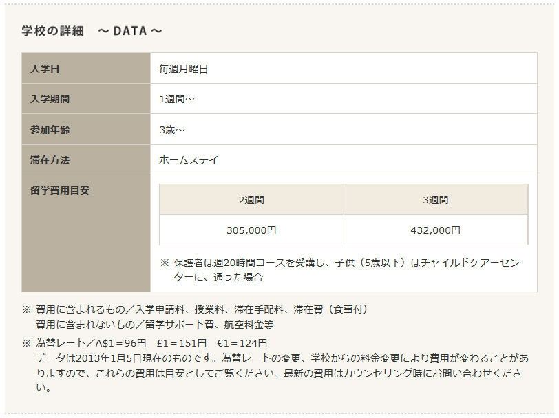
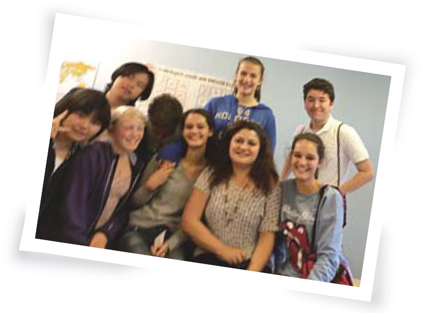
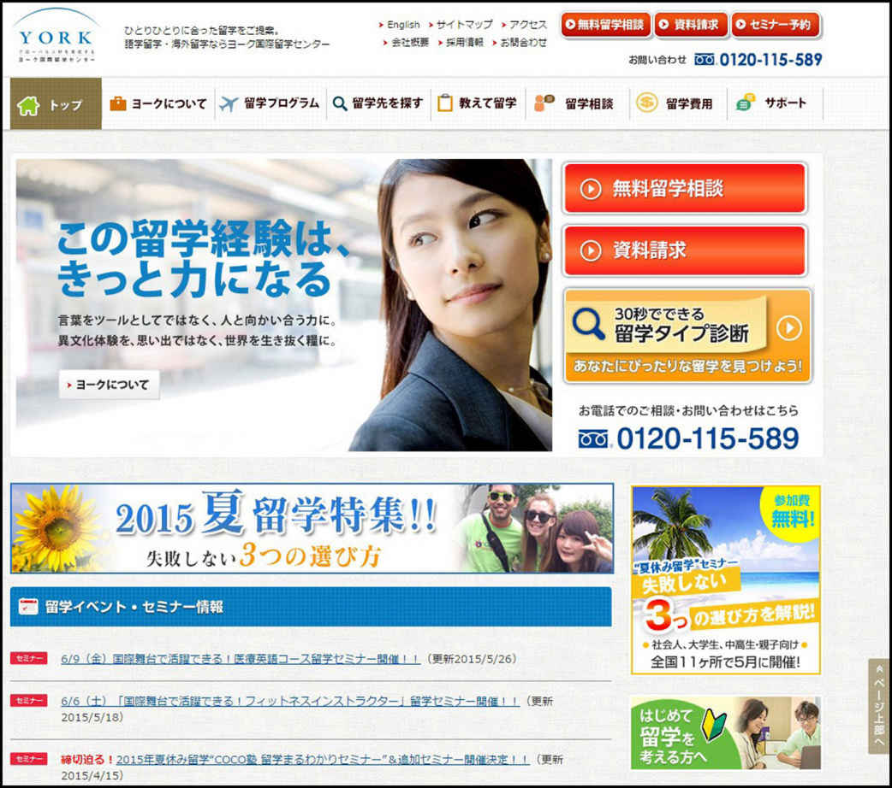

| 世界一わかりやすい！こどもの「留学」を考えたときに読む本 | |
| ヨーク国際留学センター | |
| 株式会社ヨーク国際留学センター (2015) | |
目次
Part１「親子留学」
1）親子留学とは
2）体験談紹介
Part２「小・中・高校生のジュニア留学」
1）ジュニア留学とは
2）体験談紹介
Part３「留学のステップ」
Part４「日常英会話をマスターしよう」
＊ 著者紹介
親子留学って？
親と子どもが一緒に海外で暮らし、学校に通い、英語などを学ぶものです。家を離れて違う国で生活し、本場の英語に慣れ親しみ、現地の人や他国出身の人、異文化にふれることが、特に適応能力や言語修得能力に優れた子どもには成長のチャンス。日本をふりかえり、親子の絆を深めるかけがえのない体験となるでしょう。
■参加条件と適齢期
３～１４歳の子どもを対象とするところが多いです。一部例外をのぞき、通常語学力が問われることはありません。
■参加時期と留学期間
夏季に多く開催されますが、時期を問わず毎週入学可能の学校も。留学期間は1週間から1ヵ月が多いです。
どこで学ぶ？
親子がそれぞれ、別の場所で学ぶのが一般的。
親も子も同じ語学学校に通う場合は、大人と子どものクラスに分けられます。あるいは、子どもが現地の幼稚園や小学校などに通うケースもあります。前者ではクラスメイトは多国籍な留学生となり、後者は現地のネイティブスピーカーの生徒とともに授業を受けることになります。
■プログラムの選び方
親子留学にも様々なタイプがあり、現地の子どもがメインのプランと、留学生中心のプランがあります。それぞれのメリットや特性を把握し、子どもの性格や語学力に応じて慎重に選択を。
何を学ぶ？
親は語学学校で一般英語などを学ぶことがほとんどです。子どもの場合、現地の幼稚園や学校では現地の生徒と同じ授業に参加しますが、語学学校では他国の子どもと一緒に英語を学びます。英会話やロールプレイ、絵本の読み聞かせ、ゲームなど子どもの関心を惹く工夫がなされ、楽しんで学べる授業内容となっています。
滞在方法は？
最もポピュラーといえるのがホームステイ。その国の一般家庭で家事手伝いや団らんを通じ、家庭生活を体験する貴重な機会です。子育てや家族観の違いなど新たな発見も多いでしょう。プログラムによってはホテルの手配が可能なところも。滞在が長期に渡る場合、自炊できるコンドミニアムを探す人も多いようです。
■親子留学をおすすめしたい人
○英語や異文化に興味があり、子どもにも持ってほしい
○子どもの将来に、海外留学を視野に入れている
○英会話を習っているが、実践する場や機会がない
○旅行ではなく、親子で海外に暮らしてみたい
○自己主張、他者受容などコミュニケーション能力を育みたい
○親から離れて仲間と学ぶ、独立心、自立心を養わせたいなど
どうして日本語をしゃべっちゃいけないの？と９歳になる娘が、ぐずりはじめたのは留学３日目のこと。英語を話せない初心者クラスに入ったとはいえ、英語カゼロの娘が外国人の中でストレスを感じたのは、無理もなかったかも...。
少しでも新鮮な体験をさせたいとチャレンジした親子留学は、やっぱり親のエゴだったかな、とも思ったんですね。ところが、ホストファミリーもすごく親切で、身振り手振りで娘をかまってくれ、ホストシスターのスカーレットちゃんとも仲良くなってすっかリ元気に。子どもってすごいですね。
留学２週目には英語を使うのが楽しくてしかたがないという感じで。毎朝、辞書を片手に登校し、学校でも、辞書を引きながら自分の言いたいことを伝えようとするんです。クラスのお友達もみな、韓国や中国など英語を母国語としない国の子なのでみんな同じ立場なんですから。そういう環境の中で英語を使ったことは大きな体験になったはず。
オーストラリアの学校では、先生の許可がないと子どもが勝手に薬などを飲んではいけないのですが、娘は、「お腹が痛いので、お母さんから預かっている薬を飲まなければいけない」ということを、辞書を引きながら先生に伝えたと聞いて驚きました。
アクティビティでは、子どもたちが自分たちのお小遣いでアイスクリームを買いに行ったり、バイロンペイでバーベキューをしたり。本当にいい思い出になりました。
通学は、ホストファミリーが、自家用車で私と娘を、学校のメインセンターまで送ってくれました。そこから親と子は別々になるんですが、向こうでは、教師が子どもから決して目を離さない、というような規則もしっかりしているので、子どもを預けても、不安はありませんでした。飲みかけのドリンクも放置してはいけない、というルールなどもあって、そういう意味では日本より安心だったかもしれません。
私自身は、グラマー(文法)はできても、スピーキングやヒアリングができないことを配慮してもらい、そういうクラスに入れてもらえましたので、とても気楽に授業を楽しめました。
ヨーク国際留学センターさんにお願いして最もよかったことは、すごくいい学校とホームステイ先を紹介してくれたことですね。次は夏休みに、もう一度、母と子で留学体験をしようと計画しているところです。
山本さん親子の留学DATA
＊ 留学先／オーストラリア
＊ コース／イマジン・エデュケーション
＊ 期間／2週間


King George International College （KGIC）
キング ジョージ インターナショナル カレッジ
カナダ バンクーバー郊外
バンクーバー郊外、落ち着いた環境のなか基本を重視した授業で「学び」の楽しさ発見
カナダ各地に学校を展開する、語学学校KGICが提供する親子プログラム。
場所はバンクーバー郊外、豊かな自然に恵まれた閑静な住宅地サレーで、親子それぞれが英語コース（ESL）で学び、英語学習や異文化体験に励むことができます。
ホームステイでは、カナダの豊かな文化生活を親子で体験します。
上記「留学費用」は目安です。為替レートの変動などにより費用は変更します。予めご了承ください。正式な「留学費用」については、ヨークにご確認ください。
Frances King School of English
フランセス キング スクール オブ イングリッシュ
イギリス ロンドン
ロンドンの中心地なので午後は親子で観光できる
学校のファミリー・プログラムは、子供は8歳～16歳を対象としたジュニアコースを受け、保護者は大人向けの英語コースを受けるというもの。ジュニアコースはグループワークやアクティビィティを通してコミュニケーション力を養う内容。どちらも授業は09:00～13:00までなので、午後は観光したり、学校のイベントに参加したりして親子で楽しめる。学校はロンドンの中心地にあるのでどこに行くにも便利だ。どちらのコースも入学に英語力は問われない。学校は35年以上の実績のある学校。
上記「留学費用」は目安です。為替レートの変動などにより費用は変更します。予めご了承ください。正式な「留学費用」については、ヨークにご確認ください。
Dublin City University, Language Services
ダブリンシティ大学 ランゲージサービス
アイルランド ダブリン
子供はスポーツサマーキャンプに参加する
学校のファミリー・プログラム大学の留学生向け英語コースでは夏の間、親子留学プログラムが開催されている。親御さんはキャンパス内の英語コース(午前中)を受講し、その間、お子様はスポーツサマーキャンプ(9:00～17:00)に参加する、というプログラム。サッカー、テニス、水泳、ロッククライミングなどのスポーツに加え、アドベンチャーアクティビティ、ゲーム、図工など、お子様の年齢に合わせたメニューが組まれている。ダブリンの夏は過ごしやすく、親子で充実した時間が期待できる。
上記「留学費用」は目安です。為替レートの変動などにより費用は変更します。予めご了承ください。正式な「留学費用」については、ヨークにご確認ください。
Imagine Education Australia
イマジン エデュケーション オーストラリア
オーストラリア ゴールドコースト
オーストラリアの現地小学校と同様のカリキュラムで学べる本場の英語
子どもはヤングラーナーズ・コースで、本や映画、テレビなど身近な題材から楽しく、英語、オーストラリアの文化や風習を学びます。親は大人向けのコースで一般英語などを受講。校舎はゴールドコーストの中心街にあります。
本校の専門コースに通うオーストラリア人学生との交流も期待できます。
上記「留学費用」は目安です。為替レートの変動などにより費用は変更します。予めご了承ください。正式な「留学費用」については、ヨークにご確認ください。
International College of Queensland, Australia
インターナショナル カレッジ オブ クィーンズランド オーストラリア
オーストラリア ブリスベン
子供は近くのチャイルドケアセンターで遊ぶ
サンシャインステイトと呼ばれるブリスベンは1年を通して過ごしやすいので、親子で滞在するには適した街だ。学校は街の中心地から徒歩数分のところにある。この学校の親子プログラムは、保護者が学校に通っている間、子供（5歳まで）は近くのチャイルドケアセンターで過ごすというもの。6歳以上の子供は現地の小学校に通う。

上記「留学費用」は目安です。為替レートの変動などにより費用は変更します。予めご了承ください。正式な「留学費用」については、ヨークにご確認ください。
Sun Pacific College
サン パシフィック カレッジ
オーストラリア ケワラビーチ
広大なキャンパスを持つ英語学校
学校があるケワラビーチはケアンズから車で20分ほどの静かな住宅地だ。学校の広大なキャンパスには2つの屋外温水プール、テニスコート、ゴルフ練習場、カフェテリアなどが建ち並んでいる。保護者はここで授業を受け、その間、2歳～5歳までの子供は現地のチャイルドケアセンターで過ごし、5歳～12歳までの子供は現地の小学校に通う。どちらも学校の近くにあるので保護者は授業が終わってから子供を迎えに行き、一緒に帰宅する。通学はホストファミリーが送り迎えしてくれる。
上記「留学費用」は目安です。為替レートの変動などにより費用は変更します。予めご了承ください。正式な「留学費用」については、ヨークにご確認ください。
世界各地から集まる同世代の生徒とともに学び、交流を楽しむ。
休暇を利用した小・中高生対象の「ジュニア留学」が人気を集めています。
ジュニア留学の魅力は？
春休みの時期、海外の語学学校では小・中高校生を対象としたプログラムを開催。多感な年頃に生きた英語にふれることは、語学力アップはもちろん、多国籍な仲間との交流が、異文化への興味や積極性を育み成長の大きな糧となることでしょう。
通う学校は、どんなところ？
どの学校もジュニアの受け入れ経験の豊富な英語学校です。ほとんどのケースでは週に５日、語学学校に通います。学校は交通の便のよい街中にあることが多く、放課後や週末に友達と街歩きをすることもできます。
参加する人は、どんな人？
留学生を対象としたジュニアプログラムでは、アジア、ヨーロッパ、南米など世界各地から集まった同世代の生徒がクラスメイトとなります。参加条件に語学力は問われず、初級から上級までさまざまなレベルに対応します。
どんな体験ができる？
午前は英語の授業、午後は課外活動という組み合わせがポピュラーです。課外活動はスポーツやゲームをしたり、観光地めぐりをしたり、カルチャー体験など多種多様。その国の文化を体験するとともに友達の輪を広げる絶好の機会です。
どこに、滞在する？
ホームステイでは一般家庭に迎えられ、家事手伝いや団らんを通じて、異文化暮らしを体験します。寮に住む場合は集団生活の規律を守る大切さを学び、ルームメイトとの国際交流が期待できます。日本の家族をふりかえる機会にもなるでしょう。
ヨーク国際留学センター カウンセラー
菅野由美子
■サポートについて
プランによって異なりますが、学業と生活の両面を支えるスタッフが空港の送迎、アクティビティのコーディネート、ホームシックなどの相談相手やアドバイスなどをトータルでケアします。初めての留学で不安を解消したい場合、日本人スタッフがつくプランを選ぶのも一案です。
ジュニア留学体験談
行く前は英語が心配だったけど、
カナダに友達10人できました！
大平彩嘉 さん (小学５年生)の留学DATA
留学期間：2014年7月21日～8月3日
留学先 ：カナダ／バンクーバー
学校名 ：キング ジョージ インターナショナルカレッジ
友達を作るきっかけに、折り紙を持って行きました
お母さんから、「夏休みに留学してみない？」とすすめられた時、私は少し迷いました。というのも、今年の春休みに短期の語学ツアーでニュージーランドに行ったときにはあまり英語ができなくて、現地の人たちとコミュニケーションがとれず、ちょっと寂しい思いをしたからです。「今回もそうだったらどうしよう」そう思うと心配で......。でも、「せっかくのチャンスだから、がんばって行ってみよう」そう考え直したんです。今回の目標は、海外で友達を作ること。そのためにはどうしたらいいかを考え、折り紙を持って行って、コミュニケーションのきっかけにしようと準備しました。語学学校には韓国やメキシコからの留学生がいたのですが、「どこの国から来たのですか？」「名前は何ですか？」と自分から話しかけて、相手の言っていることがわからなかったら「ゆっくり言ってください」とか「もう一度言って」とお願いしました。すると、2週間目くらいから話すのが楽しくなり、帰る時には友達が10人もできたんです。用意していった折り紙も一緒に楽しみました。
英語の授業は、わかることが増えるからおもしろい！
語学学校での授業は、英語を使った伝言ゲームやハンカチ落とし、映画鑑賞など。日本の小学校でも英語を習っていますが、カナダでの授業のほうが、私は楽しいと感じました。授業は全部英語で、知らない言葉がたくさん出てくるから、「授業のたびに、わかることがどんどん増える」のがおもしろかったんです。
先生の説明がわからなかったら「Please repeat」とか「What?」と聞きます。日本だったら「こんなこともわからないと思われたら恥ずかしいかな」と考えて質問するのをやめてしまうこともありますが、海外だったら知っている人もいないので、平気です（笑）。
英語だけじゃなく、洗濯など日本ではやらなかったことがたくさんできるようになったのも、留学に行ってよかったことです。もし行けるなら、また留学したいと思っています。
保護者の声
メールの回数がどんどん減って、安心しました
留学をすすめたのは、視野を広げてほしいと考えたからです。娘の通っている学校は全校生徒が７人という小規模の学校。いつも同じ友達としか接することができないため、どうしても、まわりを気にして行動するのがくせになっていました。カナダに着いた直後は、「○○がしたいけど、どうしたらいいかな」と何度もメールが来ていたのに、いつのまにか回数が減り、１週間もたつとこちらからのメールに、「大丈夫、自分でできたから！」と頼もしい返事が返ってくるように。帰ってきてからは何度も「私、がんばったんだよ。自分からたくさん話しかけて友達作ったんだよ」と誇らしげに報告してくれました。留学が自信につながったことを実感しましたね。

どんなプログラムに参加しましたか？
中学3年生の夏に、イギリスのロンドンにある、シュプラッハカフェに2週間の語学留学をしました。午前中は、アクティビティでロンドンの街などを見て回り、午後の英語の授業では文法の勉強をしたり英語の映画を観たりしました。絵のコンテストがあり「この世にいない動物を描く」というコンテストでクラス1番になりました。

どんな体験をしましたか？
私は、寮での滞在でしたが、シャワーの電源の入れ方、みんなで洗濯機を使うときのルールなどは、英語ではすぐに理解できなかったので、ゆっくり話してもらい何度も教えてもらいました。国の違うクラスメイトと一緒に楽しいアクティビティに参加したことや、留学の終わりに、Ｔシャツにクラスのみんなが寄せ書きをしてくれたことは、忘れられない思い出になりました。
得られたことは何ですか？
ハンガリーやドイツ、フランスから来たクラスメイトと少しずつコミュニケーションが取れるようになり、とても優しく親切な友達もできたので、２週目からは特に楽しかったです。英語で話すとき、わりと短い言葉でも、相手に通じるということも実感できました。この留学で、ますます英語が好きになり、高校進学の目標もできました。
依田紗也さんの留学DATA
＊ 留学先／イギリス ＊ 期間／2週間
＊ コース／シュプラッハカフェ ロンドン ジュニアプログラム
お母さまMessage
娘は大人しく受け身な性格で、受け応えも苦手なほう。だから留学したいと本人が言い出したときは、海外の体験で積極的になり、一つのことをやり遂げることで自信がつけばいいなと思い、留学させることにしました。最初は、うまく意思疎通ができなかったようですが、だんだんと友達と話せるようになったようです。家にいるときは、ついつい子どもがやれることも親がやってしまいがち。その意味では、私の「子離れ」の体験にもなりましたね。
サッカーを通じて友達ができたら
留学生活が楽しくなった！
山﨑 祥 さん (高校１年生)の留学DATA
留学期間：2014年7月20日～8月17日
留学先 ：カナダ／バンクーバー
学校名 ：グローバル ビレッジ イングリッシュセンター
クラスメイトと仲良くなったきっかけはスポーツ
最初の１週間は本当につらかったです｡１クラスが10人だったんですが､クラスメイトが話している英語がわからないから､いつも教室の隅の席に座っていました｡授業ではグループで話し合ったり発表したりということが多かったので､そのたびに肩身の狭い思いをしていました。
それが変わったのは､ある日のアクティビティでサッカーをしたとき｡僕はサッカーが得意でその日も２点入れることができました｡クラスメイトたちの見る目が変わって､「お前､すごいな！」って｡それからは授業中でも物おじせずにみんなと話ができるようになって､すごく気が楽になったんです｡後から聞いたら､クラスの日本人の子たちもみんな「最初の１週間は本当に大変だった」と感じていたんだそうです｡「なんだ､自分だけじゃなかったんだ亅と思いましたね。
わからないことは調べるより人に聞くほうが早い！
もう一つ変わったのが､わからないことを人に聞けるようになったこと｡僕は日本にいるときからの習慣で､わからないことはまず自分で調べて､それでもわからない時は人に聞こうと思っていました｡でも、まわりが英語だけの環境では､なにもかもわからないことだらけ｡最初は授業で出てきた単語とかフレーズを携帯電話で調べていましたが､それでは追いつかなくなり、とうとう「それはどういう意味ですか」というフレーズを携帯電話で調べて､どんどん使うようになりました(笑)｡調べるより､聞いたほうがはるかに早いし､効率的｡そう思えてからはカナダでの生活が本当に楽しくなりました。
４週間の留学を通して､英語力はずいぶん上がったと思います｡特にリスニングとスピーキング｡そして何より、「英語を話せる」という自信がつきました｡機会があれば今度は長期で行きたいと思っています。１年間ぐらい､じっくり学んでみたいですね。
保護者の声
将来を明確に意識するようになったのも留学の成果
いつも人の輪の中で穏やかに過ごしているような性格の息子に､一人の人間としての存在感を強く意識してほしいと思っていました｡そんな時､留学に行きたい､それも学校で企画されたものではなく自分で選んだものに行きたいと言い出したので､これは彼が今後の人生において大切な力をつかむチャンスだと思いました。
帰国後はずいぶん行動的になったなと感じましたね｡大学の資料を取り寄せたり､高校の先生と私との予定を調整して三者面談を自らセッティングしたり｡たった１ヶ月ですが､今までにない経験をしたことで､将来へのビジョンを強く意識したのかもしれませんね｡それも留学のひとつの成果だと思っています。
アメリカ
最高のカリフォルニア留学体験
開催する学校 ：FLS International California State Univesity, Northridge
ロスから車で約45分程度離れた場所にあるカリフォルニア州立大学ノースリッジ校の敷地内で行われる人気プログラム。ハイライトはなんといってもカリフォルニアならではのアクティビティ体験。世界から集まるジュニアたちと一緒に英語を使って最高のカリフォルニア体験をしよう！
上記「留学費用」は目安です。為替レートの変動などにより費用は変更します。予めご了承ください。正式な「留学費用」については、ヨークにご確認ください。
イギリス
ケンブリッジ大学のキャンパスで学ぶ
開催する学校 ：St.Giles University of Cambridge
イギリスの老舗英語学校St. Gilesが夏期だけケンブリッジ大学のキャンパスで開校する特別プログラムです。一日５レッスンの授業に加えてアクティビティが盛りだくさん。ヨーロッパからの学生が多く、一クラス12人の少人数制。なかなか体験できないイギリスのキャンパスライフを楽しんでください。
上記「留学費用」は目安です。為替レートの変動などにより費用は変更します。予めご了承ください。正式な「留学費用」については、ヨークにご確認ください。
カナダ
多国籍・他民族・多言語なトロントで学ぼう
開催する学校 ：Sprachcaffe Toronto
500万を超える人口、多文化で国際職豊かなトロントで学ぶプログラムです。異文化を学びながら英語を学ぶことができます。週20レッスンの英語学習とス-パーバイザーによる監督付きのプログラム。16歳以上であれば、追加料金で寮を選ぶことができます。
上記「留学費用」は目安です。為替レートの変動などにより費用は変更します。予めご了承ください。正式な「留学費用」については、ヨークにご確認ください。
オーストラリア
安心ホームステイと充実したアクティビティ！現地学校にも訪問！
開催する学校 ：SELC Sydney
25年以上の実績があるSELCから夏限定の特別プログラムです。午前中に英語レッスン、午後は校外でオーストラリアを体験。現地の文化を学習し、コアラやカンガルーなど野生動物と出会い、観光名所を満喫。そして現地校を訪問し異文化体験。初心者から安心して参加できます。
上記「留学費用」は目安です。為替レートの変動などにより費用は変更します。予めご了承ください。正式な「留学費用」については、ヨークにご確認ください。
［留学 準備ガイド］
ヨーク国際留学センター
留学実現のステップとトータルサポート

STEP 1
留学を思い立ったら
情報収集
希望や目的を明確に
「留学したい！」と思い立ったら、まずは、情報収集をしてみてください。
どんな国や街に行きたいのか？ 費用はどれぐらいかかるのか？ 海外の学校ではどんなことが学べるのか？ どんなことにチャレンジできるのか？ ウェブサイトで検索してみて、大まかなイメージをつかんでおく。それだけでも、自分にとってふさわしい留学プランを考えるうえでとても役に立つでしょう。
効率よく情報収集するには
ヨーク国際留学センターには、最新のパンフレットや関連図書などの資料がそろい、あらゆる疑問や質問に答える留学相談も行っています。一度、お気軽に立ち寄ってみてください。
留学情報なら
ヨーク国際留学センターウェブサイト

STEP 2
ぴったりの留学選び
留学相談
留学プランづくりをお手伝い
ヨーク国際留学センターで行う留学相談は無料。留学カウンセラーが１対１で対応し、さまざまな留学プログラムから、目的や要望にぴったりのプランづくりを提案いたします。
留学カウンセリング予約
 0120-115-589（通話料無料）
0120-115-589（通話料無料）
月～金 10:00～19:00 土 10:00～18:00 ※日祝日は休み
提案できる留学のスタイル・例
●短期・長期語学留学
●語学＋おけいこ・趣味
●語学＋大学聴講
●語学＋インターンシップ
●大学留学
●専門学校留学
●高校交換留学
●ワーキングホリデー
●親子留学 ほか
STEP 3
留学手続きを着実に
渡航先の決定手続き
プロにまかせて万全の準備
留学決定から出発までには、多くの手続きが必要です。英語書類の記入や海外の学校や滞在先への連絡など、何かと手間のかかる手続きも、カウンセラーが代行するので安心。
手続きをプロに任せる分、出発までの間、英語学習をしたり、ヨーク国際留学センターの出発前オリエンテーションに参加するなどし、残された時間を有効活用できます。
代行可能な手続き・例
●学校への入学申請
●各種ビザ申請
●ホームステイや寮など滞在先の手配
●学費などの海外送金
●健康診断・予防接種の案内
●海外留学生保険の加入
●航空券の手配 ほか
STEP 4
英語や生活の不安を解消
留学前の準備
留学準備
海外生活をより充実させるための、事前準備をサポートいたします。
留学先やプログラムごとのオリエンテーションを開催。ホストファミリーや友だちとの接し方、言葉や文化のギャップの乗り越え方など「海外生活のうえでの心構え」、持参するもの、海外送金や荷物の発送、携帯電話やインターネットの手続きなどの「出発前の準備」のアドバイスをいたします。
STEP 5
海外での不安もフォロー
留学中の現地サポート
メールや電話での相談
留学中も引き続き、メールや電話などで日本にいる担当カウンセラーと連絡を取り合うことができます。ホームシックといった悩み相談、プログラム延長や進路変更など、さまざまな局面でアドバイスします。
緊急時のトラブル対応
緊急事態には24時間日本語対応の『アイラック安心サポート』（有料）に連絡を。サポート期間は留学期間内で自由に設定可能です。
子ども留学でヨークが選ばれ５つの理由
言葉を、人と向かい合う力に。異文化体験を、世界を生き抜く糧に。
ヨーク国際留学センターは留学を実現するだけでなく、留学の先にある、あなたの未来をかたちにするためのサポートをいたします。
海外経験豊富なプロの安心ケア
留学生活を有意義にし、成果を実感するには「目標設定」が不可欠。英語力だけでなく、「初対面でも躊躇せず話しかける→そのための機会をどうつくるか、どんな心がけが必要か」など、対話力や人間力を総合的に伸ばすアドバイスをいたします。
入念なリサーチによる留学先、滞在先の提供
長年の留学経験や海外経験をもち、教育事情にも詳しい留学カウンセラーが留学相談を担当。自らの経験をもとに、プランづくりから学校選び、入学・渡航の手配、滞在先の選定、学習や生活面などのアドバイスなどを一貫して支援します。
子どもの成育を考えた最適なプログラム
お子様が安心安全に、楽しく過ごせて、かつグローバルに羽ばたくために必要な資質やスキルを養い、健やかな成育の一助となるプランを選定、提供します。個性や文化背景を尊重し、チームワークやリーダーシップを学ぶきっかけとなります。
留学後も見すえた将来へのアドバイス
教育の質やサービスなどの面で、ヨーク国際留学センターが厳選した教育機関を選定。安全で安心なプランのご提案はもちろんのこと、留学後のお子様の成長や英語力のアップ、あるいは進学なども視野にいれたアドバイスを行っています。
"一流"を育てる語学事業「ニチイのネットワーク」
COCO塾、Gabaマンツーマン英会話、海外の語学学校SELCをはじめとする、ニチイグループが国内外に築き上げた語学事業ネットワーク。多様化する英語学習のニーズに応えながら「グローバルに活躍できる人材の育成」を目指します。
Contents
★第１章 会話の基本表現 - その１ -
１. 呼びかけ
２. 聞き返す / 聞き取れない
３. 相づちを打つ / 会話をつなぐ
４. 話を中断する / 話題を切り替える
５. 肯定と否定
６. Yes とNo の用い方
７. 依頼する / 許可を取る
８. 誘う / 提案する
９. 依頼に応答する
10. 禁止する / 忠告する
★第２章 会話の基本表現 - その２ -
１. 日時に関すること
２. 数量に関すること
３. 頻度に関すること
４. 時や場所に関すること
５. 推測する・確信する
６. 感情表現(驚嘆する・喜ぶ・賞賛する)
７. 感情表現（驚き)
８. 感情表現(同情・悲嘆・失望)
★第３章 日常の会話表現 - 対人関係 -
１. あいさつする(日常・久々・別れ)
２. 紹介する
３. 礼を言う / 詫びる
４. 祝う
５. 見舞う
他人に呼びかける時，相手が知っている人なら名前を言うのが礼儀です。親しい間柄になると，姓(family name)ではなく，名前(firstname)で呼び合うのもごく普通のことです。
【親しい呼びかけ】
Hello やHi などは親しい人へのくだけた呼びかけです。敬称のsir やmadam と一緒には使いません。
■やあ
ヘロウ
Hello.
こんにちは。やあ。
＊ 朝・昼・夜の時間帯に関係なく使えます。
ハイ
Hi.
やあ。おい。
＊ hello よりくだけた言い方です。
セイ
Say.
ねえ。もしもし。
リスン
Listen.
ねえ。あのね。
ハイ リエ ウェア アー ユー ゴウイング
A: Hi, Rie. Where are you going?
あら，理恵，どちらへ？
1会話
アイム ジャスト ゴウイング トゥ シャピング ユール カム ウォンチュー
B: I'm just going to shopping. You'll come, won't you?
ちょうど買い物に行くところなの。あなたも一緒にどう？
リスン ザァズ サム グッド ニューズ アバウト ヨン サマ
A: Listen, there's some good news about Yong-sama.
ねえ，ヨン様の耳よりの話があるのよ。
オウ リアリ テル ミー ザット プリーズ
B: Oh, really? Tell me that, please.
えっ，ほんとう? 教えてよ。
【丁寧な呼びかけ】
■もしもし/ 失礼ですが...
相手や場所を問いません。通りすがりの人や見知らぬ人に声をかけたい時には，まずこう言って呼びかけましょう。
イクスキューズ ミー
Excuse me.
パードゥン ミー
Pardon me.
目上の人や名前の分からない人に敬意を払いたい時は敬称を使います。
サー
sir
男性に。
マダム マアム
madam(=ma'am)
婦人に。
ミス
Miss
未婚女性や若い女性に。
＊ 姓名の前につける敬称ですが，レストラン・デパート・乗物などで従業員の女性に呼びかける時にも使われます。
イクスキューズ ミー サー ワット タイム イズ イット ナウ
A: Excuse me, sir. What time is it now?
失礼ですが，今何時ですか?
イツ スィックスサ～ティ
B: It's 6:30.
6時30分です。
サンキュー ヴェリィ マッチ
A: Thank you very much.
どうもありがとうございました。
イクスキューズ ミー マアム ユー ドゥラップト ユア ハンカチフ
A: Excuse me, ma'am. You dropped your handkerchief.
あの...失礼ですが，ハンカチを落とされましたよ。
オウ サンキュー ソウ マッチ
B: Oh, thank you so much.
まあ，どうもありがとうございます。
＊ thank you so much は，比較的女性がよく使う言い方。
コ・ラ・ム
●敬称と呼びかけ
◎相手の名前が分かっていて姓名で呼びかける時は，Mr./Mrs./Miss/Ms.の敬称をつけましょう。
男性は一生涯 Mr.(ミスタァ) という敬称が使われます。
女性は未婚の時は Miss(ミス)，結婚するとMrs. (ミスィズ)と敬称が変わります。それを不便と思う女性たちによって使われ始めたのがMs. (ミズ)です。相手が独身か既婚かを気にせず使えるため，会社や職場などではよく使われています。
◎制服から職業が分かる時は，その職種の名称で相手に呼びかけることができます。
Officer (オフィサァ) おまわりさん
Guard (ガード) 守衛さん
Porter (ポータァ) ポーターさん
Conductor (コンダクタァ) 車掌さん
Waiter (ウェイタァ) 給仕さん
Waitress (ウェイトゥレス) ウエイトレスさん
◎医者や教授を「先生」と呼ぶ時は次のように使い分けます。
Doctor (ダクタァ) （医師の）先生
Professor (プロフェサァ) （教授の）先生
◎学校の先生の場合はTeacher(ティーチァ)とは呼びかけず，姓名で呼ぶのが一般的です。
Mr. Smith (ミスタァ スミス) スミス先生
Miss Smith (ミス スミス) スミス先生
相手の話し方が速すぎたり，意味が分からなかったりした時は，遠慮せずにはっきり伝えましょう。ただし，"Once more?"だけは命調，"What?" はぶっきらぼうで相手に失礼な印象を与えます。
【聞き返す時】
■何と言ったのですか?
ベッグ ユア パードゥン
Beg your pardon?
＊ 文尾を上がり調子にします。Pardon? Sorry? もよく使われます。
■何と言ったの?
ワット ディッヂュー セイ
What did you say?
＊ 親しい人へのくだけた言い方なので，目上の人には使いません。
■もう一度言ってくれませんか?
クッジュー セイ イット アゲイン
Could you say it again?
もう一度言ってくれませんか?
メイ アイ アースキユー トゥ セイ ザット ワンス モア
May I ask you to say that once more?
もう一度お願いできますか?
ウッジュー リピート ザット アゲイン プリーズ
Would you repeat that again, please?
もう一度繰り返していただけませんか?
★[聞き返す時]会話例★
ドゥ ユー ノウ ミスタァ グリーン
A: Do you know Mr. Green?
グリーン氏をご存知ですか?
アイ ベッグ ユア パードゥン
B: I beg your pardon?
もう一度おっしゃってくださいませんか?
シュアリィ アイ セッド
A: Surely. I said,
ドウ ユー ノウ ミスタァ グリーン
"Do you know Mr. Green?".
いいですとも。
「グリーン氏をご存知ですか?」と言ったのです。
イエス アイ ノウ ヒム ヴェリィ ウエル
B: Yes, I know him very well.
はい, よく存じ上げております。
【聞き取れない時】
■おっしゃることが聞き取れません
アイ キャント ヒア ユー ヴェリィ ウエル
I can't hear you very well.
おっしゃることがよく聞きとれません。
アイ ディドウント キャッチ ユー
I didn't catch you.
おっしゃることが聞き取れませんでした。
アイム アフレイド アイ ディドウント ゲッチュー
I'm afraid I didn't get you.
申し訳ないが，おっしゃることが聞き取れませんでした。
■おっしゃることが分かりません
アイム ソーリィ アイ ドウント アンダースタンド ユー
I'm sorry, I don't understand you.
すみません，お話がよく分かりません。
■もう少しゆっくり/ もう少し大きな声で
ウィル ユー プリーズ スピーク ア リトル モー スロウリイ
Will you please speak a little more slowly?
もう少しゆっくりお話しくださいませんか?
ウッジュー プリーズ スピーク ア リトル ラウダー
Would you please speak a little louder?
もう少し大きな声でお話しくださいませんか?
★[聞き取れない時]会話例★
イズ ズィス ユア ファ～スト ヴィズィト トゥ エルエイ
A: Is this your first visit to LA?
ロサンゼルスに来られるのは今回が初めてですか?
アイム ソーリィ アイ ディドウント キャッチ ユー
B: I'm sorry, I didn't catch you.
すみません。聞きとれませんでした。
ウッジュー プリーズ スピーク ア リトウル モー スロウリイ
Would you please speak a little more slowly?
もう少しゆっくりお話しくださいませんか?
オーライト アイル リピート ザット
A: All right. I'll repeat that.
わかりました。では，もう一度言いましょう。
相手の話を聞く時，その内容に応じて相づちを打つと話がよりスムーズに進みます。聞き上手になって話をはずませるのも，会話の大事なコツです。会話をつなぐためのフレーズも，知っておきましょう。
【相づちを打つ】
単なる相づちの時は文尾を下がり調子にします。文尾を上がり調子にすると，驚きや疑問の意味になります。
■そうですか
イズ ザット ソウ
Is that so?
リアリィ
Really?
■あら， そうなの
オー アー ウィ
Oh,are we?
イズ ザット ライト
Is that right?
アー ユー
Are you?
■ほんとうにそうですね
イェス インディード
Yes, indeed.
＊ yes と共に用います。indeedだけで使うと驚きや皮肉の意味に受け取られることがあります。
■なるほど
アイ スィー
I see.
アイ ガット イト
I got it.
アイ アンダスタンド
I understand.
■いいですね
ファイン
Fine.
いいねぇ。
グッド
Good.
結構なことだ。
ザッツ グレイト
That's great!
それはすごい!
■冗談でしょう
ユア キディング
You're kidding!
★[相づちを打つ]会話例★
トム イズ リーヴィング フォ ニュー ヨーク ネクスト ウィーク
A: Tom is leaving for New York next week.
トムは，来週ニューヨークへ出発するそうです。
イズ ザット ソウ
B: Is that so?
そうですか。
ワット ア プリティ フラウア
A: What a pretty flower!
何てかわいらしい花でしょう!
イェス インディード
B: Yes, indeed.
ほんとうにそうですね。
【会話をつなぐ】
■ところで
バイ ザ ウェイ
By the way.
インスィデンタリ
Incidentally.
ついでながら。
■えーと
ア～
... er ...
ええと...。
ウェル
Well ...
え一と。そうですね。
レット ミー スィー
Let me see ...
え一と。あのね。
ナウ ウェイト ア ミニト
Now, wait a minute ...
さて, ちょっと待ってくださいよ。
■いずれにしても
エニ ウェイ
Any way.
■実をいうと
ザ ファクト イズ
The fact is ...
■言い換えると
イナ ワ～ド
In a word.
一言で言えば。
イナザァ ワ～ド
In other words.
言い換えれば。
トゥ ビ ブリーフ
To be brief.
手短に言うと。
イン ショート
In short.
つまり。
★[会話をつなぐ]会話例★
ウェン ディッヂュー カム ホウム イェスタディ
A: When did you come home yesterday?
昨日は何時に帰宅しましたか?
アイ ケイム ホウム ア～ アト エイト イン ズィ イーヴニング
B: I came home ... er ... at eight in the evening.
家に帰ったのは..., ええと...，夜の8 時でした。
ワット ワズ ザット アクトゥレスィズ ネイム
A: What was that actress's name?
ユー ノウ シ ワン ズィ アキャデミィ アウォード
You know, she won the Academy Award.
あの女優の名前は何でしたっけ。ほら, アカデミー賞を取った人。
ウェル レット ミー スィー イト ワズ イーザァ
B: Well, let me see..., it was either
キャサリン オー クリスチン
Catherine or Christine.
アイム ナット クワイト シュア
I'm not quite sure.
ええ一と, キャサリンかクリスチンとか言ったと思うのですが...，はっきりしません。
会話中の人に話しかけたり会話中に話題を替えたりする時は，中断することをまず伝えてから話に入りましょう。
【話を中断する】
■お話中すみません
パードゥン ズィ インタラプション
Pardon the interruption.
お話中に失礼。
イクスキューズ ミー フォ インタラプティング ユー
Excuse me for interrupting you.
お話中にすみません。
アイム ソーリィ トゥ インタラプト ユー バト
I'm sorry to interrupt you, but ...
お話の途中に失礼ですが...。
■それで思い出しましたが...
ザット リマインヅ ミー
That reminds me ...
それで思い出しましたが...。
★[話を中断する]会話例★
アイム ソーリィ トゥ インタラプト ユー バト アイム アフレイド アイ マスト ビー ゴウイング ナウ
A: I'm sorry to interrupt you, but I'm afraid I must be going now.
お話の途中ですが, そろそろおいとましなければ。
アー ユー リーヴィング オールレディ
B: Are you leaving already?
もうお帰りになるのですか?
アイ ハヴ ア グレイト アプリーシエイション オヴ ヂャズ ミューズィク
A: I have a great appreciation of jazz music.
私はジャズが大好きです。
ザット リマインヅ ミー ザァズ ア グッド パブ ニア ヒア
B: That reminds me, there's a good pub near here.
それで思い出しましたが,この近くにいいパブがありますよ。
【話題を切り替える】
■話は変わりますが...
チェインヂング ザ サブヂェクト
Changing the subject, ...
話はちがいますが。
メイ アイ セイ ア ワ～ド
May I say a word?
ひとこといいですか?
ナット トゥ チェインヂ ザ サブヂェクト バト
Not to change the subject, but ...
話題を変えるわけではないのですが...。
★[話題を切り替える]会話例★
チェインヂング ザ サブヂェクト ハウ ドゥ ユー フィール ザ レイニィ スィーズン イン ヂャパン
A: Changing the subject, how do you feel the rainy season in Japan?
話はちがいますが, 日本の梅雨時の天候をどう思いますか?
アイム スィック オヴ ズィス レイニィ ウェザァ
B: I'm sick of this rainy weather.
こういう雨の気候にはうんざりですよ。
日本人は「はい」「いいえ」を言う時，返事をあいまいにしてそれとなく悟らせることがよくありますが，外国人には意味不明で不誠実と映ります。英会話では自分の意志をはっきりさせましょう。
【肯定・承諾する】
■はい， そうです
イェス
Yes.
はい。
イェア
Yeah.
うん。
＊ 親しい間柄の時に用いられる。
■いいですよ
依頼などの返事に「はい，承知しました」の意味で用います。
サ～トゥンリィ
Certainly.
いいですよ。
シュア
Sure.
いいとも。
ファイン
Fine.
よさそうです。
＊ 「（それで）結構です」の意味合いで，店で商品を見せられて買う意志を示す時などに使うといいでしょう。
■もちろんです
オヴ コース
Of course.
★[肯定・承諾する]会話例★
キャンニユー ヘルプ ミー
A: Can you help me?
手伝ってくれる?
シュア
B: Sure.
いいよ。
ザトゥル ビー ファイン
A: That'll be fine.
こちらがよさそうです。
ザッツ ファイン
B: That's fine.
それでいいです。
ウィル ユー メイク コフィ
A: Will you make coffee?
コーヒーを入れてくれる?
イェス オヴ コース
B: Yes, of course.
ええ，もちろんですとも。
【同意する】
■その通りです
イグザクトゥリィ
Exactly.
ユア ライト
You're right.
ザッツ トゥルー
That's true.
■なるほど
アイ スィー
I see.
■私もそう思います
イェス アイ スィンク ソウ
Yes, I think so.
アイ アグリー ウィズ ユー
I agree with you.
同感です。
ザッツ マイ オピニョン トゥー
That's my opinion, too.
同意見です。
★[同意する]会話例★
マユミ イズ ヴェリィ キュート イズント シ
A: Mayumi is very cute, isn't she?
まゆみはとてもかわいいよね。
イグザクトゥリィ
B: Exactly.
そう，そのとおり。
スィー アイ トウルド ユー ソウ
A: See, I told you so.
ほら，言ったとおりでしょ。
オウ アイ スィー
B: Oh, I see.
ああ，なるほどね。
【否定する】
■いいえ
オウ ノウ
Oh, No.
いいえ，違います。
■反対です
アイ アブヂェクト トゥ イト
I object to it.
アイ ドウント アグリー ウィズ ユー
I don't agree with you.
賛成できません。
■まだです
ナット イェット
Not yet.
■一度もないです
アイ ネヴァ ハヴ
I never have.
■もちろん違います
オヴ コース ナット
Of course not.
サ～トゥンリィ ナット
Certainly not.
全然違います。
■それは知りませんでした
アイ ディドウント ノウ ザット
l didn't know that.
ザッツ ニューズ トゥ ミー
That's news to me.
それは初耳です。
■そうは思いません
アイ ドウント スィンク ソウ
I don't think so.
アイ ディサグリー
I disagree.
同意できません。
★[否定する]会話例★
ディッヂュー ゴウ ザァ イェスタディ
A: Did you go there yesterday?
きのうそこへ行った?
ノウ アイ ディドウント
B: No, I didn't.
いや，行かなかったよ。
ハヴュー エヴァ ビーン トゥ キャナダ
A: Have you ever been to Canada?
カナダへ行ったことある?
ノウ アイ ネヴァ ハヴ
B: No, I never have.
いいえ，一度もないです。
日本語では，" はい" という言葉で否定したり，" いいえ" と言って同意したりすることがあります。英語では，質問の形式いかんにかかわらず，答えの内容が肯定ならば"Yes"，否定ならば"No" です。
【「はい」の意味の"No"】
■はい， 違います
ユー アーント チャイニーズ アー ユー
A: You aren't Chinese, are you?
中国の方ではありませんね。
ノウ アイム ナット アイム ヂャパニーズ
B: No, I'm not. I'm Japanese.
はい，違います。日本人です。
＊ うっかり「はい」に引きずられて，"Yes, I'm not. " と言ってしまいがちです。
■はい， 行けません
キャンチュー カム
A: Can't you come?
来られませんか？
ノウ アイム アフレイド アイ キャント
B: No, I'm afraid I can't.
ええ，だめなんです。
■はい， いません。
ドウンチュー ハヴ ア ブラザァ
A: Don't you have a brother?
男の兄弟はいないのでしょう?
ノウ アイ ドウント
B: No, I don't.
はい，いません。
■はい， 知りません
ドウンチュー ノウ ヒズ ネイム
A: Don't you know his name?
彼の名前を知らないのですか?
ノウ アイム アフレイド アイヴ フォガトゥン
B: No, I'm afraid I've forgotten.
ええ，忘れてしまいました。
＊ "No"は"No, I don't know." の意味なので, Yesと答えるのは間違い。
【「いいえ」の意味の"Yes"】
質問がどうであれ，答が肯定ならば"Yes"，否定ならば"No" となります。
■いいえ， 好きです
ドウンチュー ライク グリーン ティー
A: Don't you like green tea?
日本茶はお嫌いですか？
イェス アイ ドゥ
B: Yes, I do.
いいえ，好きです。
＊ 嫌いなら "No, I don't." 「はい，嫌いです」となります。
■いいえ， 食べます
ユー ドウント イート ロー フィッシ ドゥ ユー
A: You don't eat raw fish, do you?
生の魚は食べないのでしょう？
イェス アイ ドゥ アイ ライク サシミ ヴェリィ マッチ
B: Yes, I do. I like sashimi very much.
いいえ，食べます。刺身は大好きです。
「困った時はお互いさま」は世界共通ですが，人に頼む時は気軽に頼めることから丁重にお願いすべきものまで程度はさまざまです。
【依頼する】
■手伝ってください
プリーズ ヘルプ ミー
Please help me.
ヘルプ ミー ウィル ユー
Help me, will you?
お手伝いくださいね。
キャン ユー ヘルプ ミー
Can you help me?
手伝ってくれませんか?
■手伝ってくださいませんか?
アイ ワンダァ イフ ユー ウド ヘルプ ミー
I wonder if you would help me?
手伝っていただけないかしら?
＊ I wonder... は婉曲な表現で，知己の間柄でのていねいな言い方です。
メイ アイ アースキユー トゥ ヘルプ ミー
May I ask you to help me?
手伝っていただけないでしょうか?
ウッジュー プリーズ ヘルプ ミー
Would you please help me?
お手伝いいただけませんでしょうか?
＊ ていねいに頼みたい時に使います。
■お願いがあるのですが
キャナイ アースキユー ア フェイヴァ
Can I ask you a favor?
頼んでいいですか?
メイ アイ アースキユー ア フェイヴァ
May I ask you a favor?
お願いがあるのだけど。
ウィル ユー ドゥ ミー ア フェイヴァ
Will you do me a favor?
お願いがあるのですが。
【許可を取る】
■～してもいい?
キャナイ バザァ ユー フォ ア モウメント
Can I bother you for a moment?
ちょっとお邪魔してもいい?
キャナイ バロウ サム ブックス フロム ユア ライブレリィ
Can I borrow some books from your library?
書斎の本を借りていいかい?
■～してもかまいませんか?
メイ アイ スィット ヒア
May I sit here?
ここに座ってもいいですか?
メイ アイ アースキユー ア クウェスチョン
May I ask you a question?
質問してもいいですか?
メイ アイ スピーク トウ ユー
May I speak to you?
お話ししてもかまいませんか?
メイ アイ ユーズ ザ バスルム プリーズ
May I use the bathroom, please?
お手洗いをお借りできますか？
メイ アイ ビ イクスキューズド フロム ザ テイブル
May I be excused from the table?
ちょっと座をはずしてもいいでしょうか?
■～してもかまいませんか?
ドゥ ユー マインド イフアイ スモウク
Do you mind if I smoke?
たばこを吸ってもいいでしょうか?
イクスキューズ ミー ドゥ ユー マインド イフ ウィ ヂョイン ユー
Excuse me, do you mind if we join you?
すみません, わたしたちも同席してかまいませんか？
■～させてください
レット ミー ドゥ ザット プリーズ
Let me do that, please.
私にそれをさせてください。
レット ミー スィー ユー オフ アト ズィ エアポート
Let me see you off at the airport.
ぜひ空港で見送らせてね。
レット ミー ハヴ ア ルック アト イト イフ ユー ドウント マインド
Let me have a look at it, if you don't mind.
差し支えなければ，ちょっと見せてくれませんか?
■～してもよろしいでしょうか?
ウィル ユー プリーズ レット ミー ハヴ ア デイ オフ トゥモーロウ
Will you please let me have a day off tomorrow?
あした一日休みを取ってよろしいでしょうか?
＊ 依頼したり，許可を取ったりした場合の返事については，37pの「依頼に応答する」を参考にしてください。
人は誘ったり，誘われたりして行動を共にすることでつきあいを深めます。また，積極的に提案することで信頼関係を築くこともできます。おおいに声を掛け合いましょう。
【誘う】
■...しようよ
「...しない?」「...しません?」などと誘う時に使う代表的な言い方です。
シャル ウィ
Shall we ...?
シャル ウィ ゴウ フォ ア ウォーク
Shall we go for a walk?
散歩に行かない?
ウォンチュー
Won't you ...?
...しない?
ウォンチュー ヂョイナス
Won't you join us?
いっしょにやらない?
レッツ シャル ウィ
Let's ..., shall we?
...しましょう?
レッツ プレイ テニス シャル ウィ
Let's play tennis, (shall we)?
テニスをしましょうよ?
＊ shall we を省いて使うことも多い。
■...しませんか?
"Would you ...? " は，ていねいな誘いの表現です。
ウッジュー ライク トゥ
Would you like to ...?
...しませんか?
ウッジュー ライク トゥ ゴウ トゥ ア ムーヴィ
Would you like to go to a movie?
映画を見に行きませんか?
ウッジュー ケア フォ
Would you care for ...?
...しませんか?
ウッジュー ケア フォ アナザァ カップ
Would you care for another cup?
もう一杯いかがですか?
■...はどう?
ハウ アバウト
How about ...?
ハウ アバウト ゴウイング フォ ア スウィム
How about going for a swim?
泳ぎに行くのはどう?
ウィア ボード ハウ アバウト ドゥライヴ トゥ イズ
We're bored. How about drive to Izu?
退屈ねえ。どう，伊豆へドライブに行かない?
★[誘う]会話例★
レッツ テイク ア ショート レスト
A: Let's take a short rest.
少し休みましょうか?
イェス レッツ
B: Yes, let's.
ええ, そうしましょう。
レッツ ゴウ トゥ ザ レストラント シャル ウィ
A: Let's go to the restaurant, shall we?
食事に行きませんか?
グッド アイディア アイム スターヴド
B: Good idea. I'm starved.
いいですねえ。私はお腹がすいています。
【提案する】
■私が...しましようか?
シャル アイ
Shall I ...?
＊ "Shall I. . . ?" は，こちらから申し出て相手の意志を確認する基本的な形です。
シャル アイ コール ア タクスィ
Shall I call a taxi?
タクシーを呼びましょうか?
シャル アイ コール ユー アゲイン レイタァ
Shall I call you again later?
あとでまた電話しましょうか?
シャル アイ ブリング サムスィング トゥ ドゥリンク
Shall I bring something to drink?
何か飲み物をお持ちしましようか?
シャル アイ ショウ ユー ザ ウェイ オー ドゥロー ア マップ フォ ユー
Shall I show you the way or draw a map for you ?
私がご案内しましょうか?それとも地図を描きましょうか?
シャル アイ テイク ユー トゥ ザ ダクタァ
Shall I take you to the doctor?
お医者さんへお連れしましょうか?
＊ この表現は「病院へお連れしましょうか?」の意味にも使われます。
"go to the hospital" と言うと「重病」や「入院する」の意味合いが強くなります。
依頼された時の応答としては気分や状況によって「快諾する」「可能なら許諾する」「断る」などさまざまです。快諾のつもりで単に"Yes."と答えると，あまり乗り気でないと思われることがあります。
【快諾する】
■いいですとも
シュア シュアリィ
Sure. / Surely.
サ～トゥンリィ
Certainly.
オーライト
All right.
ノウ プラブレム
No problem.
オウ ケイ
0. K.
■喜んで
マイ プレジァ
My pleasure.
ウィズ プレジァ
With pleasure.
アイド ビー グラッド トゥ
I'd be glad to.
アイド ラヴ トゥ
I'd love to.
■もちろんですとも
イェス オヴ コース
Yes, of course.
ワイ オヴ コース
Why, of course.
ワイ ナット
Why not?
オウ イェス バイ オール ミーンズ
Oh, yes, by all means.
★[快諾する]会話例★
ウィル ユー レンド ミー ア ハンド
A: Will you lend me a hand?
手を貸してくれる?
オウ シュア
B: Oh, sure.
いいとも。
クッジュー ギヴ ミー ア ライド プリーズ
A: Could you give me a ride, please?
車で送っていただけませんかしら。
オーライト イツ ナット トゥラブル フォ ミー
B: All right. It's not trouble for me.
いいですよ。お安いご用です。
メイ アイ カム イン
A: May I come in?
入ってもいいですか?
イェス オヴ コース
B: Yes, of course.
ええ, いいですとも。
【消極的に受諾する】
■できることなら
シュア イフアイ キャン
Sure if I can.
できることならいいですよ。
エニスィング アイ キャン ドゥ
Anything I can do.
わたしにできることなら何でも。
■場合によりけり
ザッツ ディペンヅ
That's depends.
場合によりけりです。
■急ぎでなければ
サ～トゥンリィ バト アイ ホウプ イツ ナット ア～ヂェント
Certainly, but I hope it's not urgent.
いいですけど, 急ぎじゃなければいいのですが。
■(時間的に)長くならなければ
アイ ドウント マインド アト オール イフ イツ ナット フォ トゥー ロング
I don't mind at all, if it's not for too long.
あまり長くならなければいいですよ。
■できるだけやってみましょう
アイル ドゥ ザ ベスト アイ キャン
I'll do the best I can.
アイル トゥライ マイ ベスト
I'll try my best.
★[消極的に受諾する]会話例★
ウィル ユー ドゥ ミー ア フェイヴァ
A: Will you do me a favor?
お願いしたいことがあるのですが。
シュア イフ アイ キャン ワット イズ イト
B: Sure if I can. What is it?
いいですよ，私にできることなら。何ですか?
ウィル ユー ドゥ サムスィング フォ ミー
A: Will you do something for me?
ちょっとお願いしていいですか?
サ～トゥンリィ バト アイ ホウプ イツ ナット ア～ヂェント
B: Certainly, but I hope it's not urgent.
いいですけど, 急ぎじゃなければいいのですが。
【やんわり断る】
■その気にならない
アイ ドウント フィール ライク イト ナウ
I don't feel like it now.
今はそういう気分ではありません。
アイム ソーリィ バト アイム ナット イン ザ ムード
I'm sorry, but I'm not in the mood.
ごめんなさい。その気にならないのです。
アクチュアリィ アイ ドウント リアリ ワント トゥ
Actually, I don't really want to.
実は, あまり気がのらないのです。
■またいつか
間接的に断るときの表現です。
ウェル レッツ メイク イト サム アザァ タイム
Well, let's make it some other time.
またの機会ということに。
メイビー サム アザァ タイム
Maybe some other time.
また，いつかね。
★[やんわり断る]会話例★
ワイ ドウント ウィ プレイ チェス ケン
A: Why don't we play chess, Ken?
ケン，チェスでもやらないかい?
ソーリィ アイム ナット イン ザ ムード
B: Sorry I'm not in the mood.
悪いけど, あまりやりたくないんだ。
【断る】
■残念ですができません
アイム アフレイド アイ キャント ドゥ ザット
I'm afraid I can't (do that).
アイム ソーリィ バト アイ キャント ヘルプ ユー
I'm sorry, but I can't (help you).
残念ながらお受けできません。
アイド ライク トゥ セイ イェス バト アイ キャント ズィス タイム
I'd like to say "yes", but I can't this time.
お引き受けしたいのですが，今回はだめです。
アイド リアリ ライク トゥ バト アイ ジャスト キャント
I'd really like to, but I just can't.
本当にそうしたいのですが，だめなのです。
■用事があります/ 時間がありません
アイム ソーリィ バト アイム ビズィ ライト ナウ
I'm sorry, but I'm busy right now.
残念ながら, 今手が離せないのです。
アイム ソーリィ バト アイ ドウント ハヴ タイム トゥ ヘルプ ユー
I'm sorry, but I don't have time to help you.
悪いのですけど，お手伝いする時間がないのです。
アイヴ ガット サムスィング インポートゥント トゥ ドゥ
I've got something important to do.
大事なことをやらないといけませんので。
■予約があります
アイ ハヴ アン アポイントゥメント ウィズ マイ デンティスト ズィス アフタヌーン
I have an appointment with my dentist this afternoon.
午後，歯医者に行く予約を入れてあるのです。
＊ 「時間がない」「先約がある」というように理由を添えれば，断られたほうもすんなり納得できます。
★[断る]会話例★
レッツ ドゥラップ イン ヒア フォ ア カップ オヴ コフィ
A: Let's drop in here for a cup of coffee.
ちょっとここでコーヒーを一杯飲んでいこうよ。
ウェル アイム アフレイド アイ ハヴント ガット タイム ナウ
B: Well, I'm afraid I haven't got time now.
う一ん, 今時間がないんです。
【きっぱり断る】
強く拒絶することになるので，時と場合を考えて使いましょう。
■できません
ノウ アイ キャント ドゥ イト
No, I can't do it.
いいえ, それはできません。
ノウ アイ キャント ユア アースキング トゥー マッチ
No, I can't. You're asking too much.
できません。それは無理な要求というものです。
相手の依頼に「だめ」を出したり，親しい相手でも忠告したりすることが時には必要です。相手に応じて使い方に配慮しましょう。
【禁止する】
■いけません
ユー メイ ナット
You may not.
＊ 子供や生徒が"May I...?" と許可を求めるのに応じて，親や教師が「いけません」と返事をする場合のように目上から目下に使うのが一般的です
＊ 対人関係での"May I...?" には，"No" ではなく"I'm sorry, you can't. "「申し訳ありませんがだめです」と言ってその理由を告げるのが適当です。
メイ アイ カム イン ダッド
A: May I come in, Dad?
お父さん, 入っていい?
ノウ ユー メイ ナット
B: No, you may not.
いけません。
メイ アイ カム イン
A: May I come in?
入ってよろしいでしょうか?
アイム ソーリィ ユー キャント アイム ライティング ナウ
B: I'm sorry, you can't. I'm writing now.
申し訳ないがご遠慮願います。今執筆中なのです。
■...してはいけない
ユー マスント トーク ライク ザット
You mustn't talk like that.
そんなふうに言ってはいけない。
＊ mustn't(=must not)は，may not より強い「禁止」を意味します。
ドウント イート ズィス バナナ イツ バッド
Don't eat this banana. It's bad.
このバナナは食べるな。傷んでいる。
＊ Don't. . . は命令口調です。
■困ります
プリーズ ドウント
Please don't.
メイ アイ スピーク トゥ ユー ア リトゥル モー クウィクリィ
A: May I speak to you a little more quickly?
もうちょっと速くお話ししていいでしょうか?
ノウ プリーズ ドウント
B: No, please don't.
いや, それは困ります。
■ご遠慮ください
アイド ラザァ ユー ディドウント
I'd rather you didn't.
メイ アイ カピィ フロム ズィーズ ペイパァズ
A: May I copy from these papers?
この書類からコピーしてもいいでしょうか?
ウェル アイド ラザァ ユー ディドウントイフ ユー ドウント マインド
B: Well, I'd rather you didn't, if you don't mind.
ええと，それはちょっとご遠慮願いたいのですが。
■いけないと思います
アイ ゲス ナット
I guess not.
アー ウィ アラウド トゥ スモウク イン ズィス ルム
A: Are we allowed to smoke in this room?
この部屋でタバコを吸っても構わないよね?
ノウ アイ ゲス ナット
B: No, I guess not.
いや, いけないと思いますよ。
ズィス イズ ア ナン スモウキング ルム
This is a non-smoking room.
ここは禁煙室です。
キャン アイ パーク マイ カー ヒア
A: Can I park my car here?
ここに駐車していいかな?
オウ アイム アフレイド ユー キャント
B: Oh, I'm afraid you can't.
いや，まずいんじゃないかと思いますけど。
【忠告する】
■...するのがいいと思います
アイ スィンク ユー シュド
I think you should ...
アイ スィンク ユー オート トゥ
I think you ought to ...
アイ スィンク ユー オート トゥ イート レギュラリィ
I think you ought to eat regularly.
きちんと食事するのがいいと思いますよ。
アイヴ ガット ア ヘデイク ズィス モーニング
A: I've got a headache this morning.
今朝から頭痛がしているんだ。
ユー シュド テイク ア デイ オフ フロム ワ～ク
B: You should take a day off from work.
一日仕事を休んだほうがいいですよ。
ユー オート トゥ スィンク トゥワイス ビフォー ユートゥライ イト
A: You ought to think twice before you try it.
やる前にもう一度よく考えてからにしなさいよ。
イェス アイ スィンク ソウ
B: Yes, I think so.
うん, そうだね。
■...しないほうがいいと思います
アイ ドウント スィンク ユー オート トゥ
I don't think you ought to ...
アイ ドウント スィンク ユー シュド
I don't think you should ...
アイ ドウント スィンク ユー シュド テイク エヴリスィング ソウ スィリアスリィ
I don't think you should take everything so seriously.
何から何までそんなに真面目に考えないほうがいいですよ。
アイム ゴウイング トゥ トゥライ ハング グライディング
A: I'm going to try hang-gliding.
ハンググライダーに乗ってみようと思っているんだ。
オウ アイ ドウント スィンク ユー オート トゥ ドゥ
B: Oh, I don't think you ought to do.
それは止めておいたほうがいいんじゃないの。
■...してはどう?
ホワイ ドウンチュー
Why don't you ...?
＊ 親しい間柄で忠告する時に使います。
ホワイ ドウンチュー ステイ イン ベッド
Why don't you stay in bed?
休んでいたらどう?
ホワイ ドウンチュー テイク プライヴェト レスンズ
Why don't you take private lessons?
個人レッスンを受けてみたら?
■...すべきだ
ユード ベタァ
You'd better ...
...すべきです。
＊ "had better..." は命令に近いので，目上に対しては用いません。
ユード ベタァ ゴウ ナウ
You'd better go now.
今すぐ行きなさい。
ユード ベタァ ゴウ アンド スィー ア ダクタァ
You'd better go and see a doctor.
医者に診てもらうべきだよ。
ユード ベタァ スタップ カティング ユア クラス ソウ オフン
You'd better stop cutting your class so often.
授業をしばしばさぼるのはやめたほうがいいよ。
2 会話の基礎知識...その2...
時間・曜日・月日・年などを話題にすることが，会話ではひんぱんに登場します。すぐに言ったり，返事したりできますか?
【時刻を聞く/ 答える】
■(今)何時ですか?
ワッツ ザ タイム
What's the time?
ワット タイム イズ イット ナウ
What time is it (now)?
ドゥ ユー ハヴ ザ タイム
Do you have the time?
＊ Do you have time? のようにthe を付けない場合は「時間がありますか? 」の意味になります。
ワット イズ ザ コレクト タイム
What is the correct time?
正確な時間は何時ですか?
メイ アイ アースキユー ザ タイム
May I ask you the time?
何時でしょうか?
クッジュー テル ミー ザ タイム
Could you tell me the time?
何時か教えていだだけますか?
■時間の答え方
イツ ジャスト フォー オクラック
It's just four (o'clock).
ちょうど4 時です。
＊ o'clock は略してかまいません。
イツ アラウンド トゥー
It's around two.
2 時ごろです。
＊ around の代わりにabout も使われます。
イツ イグザクトゥリィファイヴ ミニツ パスト イレヴン
It's exactly five minutes past eleven.
正確には11時5分です。
コ・ラ・ム
●時刻の言い方
時刻は，「時」と「分」の順に数字だけを言うのが一般的です。
15分前，半，午前や午後の言い方も覚えておきましょう。
◎10時7分
テン セヴン
ten seven
◎午前6時45分
スィックス フォーティ ファイヴ エイエム
six forty-five a.m.
◎9時45分
ナイン フォーティナイン ファイヴ
nine forty-five
◎午後11時15分
イレヴン フィフティーン ピーエム
eleven fifteen p.m.
◎10時15分前
ア クウォータァ トゥ テン
a quarter to ten
◎真夜中（午前零時）
ミドゥナイト
midnight
◎ 5時半◎正午（午後零時）
ファイヴ サ～ティ ヌーン ハフ パスト ファイヴ
five thirty noon half past five
【曜日・月日を聞く】
■きょうは何曜日?
ワット イズ トゥデイ
What is today?
ワット デイ イズ イット トゥデイ
What day is it today?
ワット デイ オヴ ザ ウィーク イズ イット トゥデイ
What day of the week is it today?
ワッツ トゥデイ
A: What's today?
きょうは何曜日?
イツ ウェンズディ
B: It's Wednesday.
水曜日です。
■今日は何日?
ワット デイト イズ イット トゥデイ
What date is it today?
ワット イズ ザ デイト トゥデイ
What is the date today?
ワット デイト オヴ ザ マンス イット トゥデイ
A: What date of the month it today?
今日は何月何日?
イツ ザ テンス オヴ メイ トゥデイ
B: It's the tenth of May today.
5月10日です。
コ・ラ・ム
●日付の言い方
カレンダーの「日付」を表す時は，"one"のような基数ではなく，"first[ファ～スト]" のような順序を意味する序数を使うのが正式です。しかしながら，日常会話では基数を使うこともよくあります。月日の言い方には何通りかあります。
◎ 5月lO日
マーチ テン
March ten
マーチ ザ テンス
March (the) tenth
ザ テンス オヴ マーチ
the tenth of March
＊ 10 日を強調する言い方。
●曜日名
サンディ
Sunday
日曜日
マンディ
Monday
月曜日
テューズディ
Tuesday
火曜日
ウェンズディ
Wednesday
水曜日
サ～ズディ
Thursday
木曜日
フライディ
Friday
金曜日
サタディ
Saturday
土曜日
●月名
ヂャニュエリィ
January
1 月
フェブルエリィ
February
2 月
マーチ
March
3 月
エイプリル
April
4 月
メイ
May
5 月
ヂューン
June
6 月
ヂュライ
July
7 月
オーガスト
August
8 月
セプテンバァ
September
9 月
アクトゥバァ
October
10 月
ノヴェンバァ
November
11 月
ディセンバァ
December
12 月
■○年○月○日生まれ
アイ ワズ ボーン オン アクトゥバァ トゥウェンティ フィフス イン ナインティーン セヴンティワン
I was born on October twenty-fifth in 1971.
私は1971 年の10 月25 日に生まれました。
＊ on とin に注意。
アイ ワズ ボーン イン アクトゥバァ
I was born in October.
私は10月生まれです。
＊ in に注意。
■○月○日に亡くなりました
ヒズ ファーザァ パスト アウェイ オン オーガスト トウェンティ ファ～スト
His father passed away on August
彼の父親は8月21日に亡くなりました。
■国民の祝日
フェブルエリィ ザ イレヴンス イズ ア ナショナル ハリディ
February (the) eleventh is a national holiday.
2月11日は国民の祝日です。
■その他
アイム プラニング トゥ ヴィズィト シカーゴウ イン マーチ
I'm planning to visit Chicago in March.
3月にシカゴを訪れる予定です。
レッツ ミート オン ディセンバァ セヴンス
Let's meet on December 7th.
12月7日に会いましょう。
アイ ガット ヒア イン ザ モーニング
I got here in the morning.
午前中にこちらに着きました。
アイ アム フリー オン マンディ イーヴニング
I am free on Monday evening.
月曜の夕方は暇です。
コ・ラ・ム
● 「...に」と言うときの"in" と"on"
「○日に」は"on" → 「10 日に」"on tenth"
「○曜日に」は"on" →「火曜日に」"on Tuesday"
「○月に」は"in" →「5 月に」"in May"
「○月○日に」は"on" →「5 月10 日に」"on May 10"
「○年に」は"in" →「1998 年に」"in 1998"
「午前に」・「午後に」・「夕方に」は"in"
→ in the morning / in the afternoon / in the evening
「○曜日の午前[午後・夕方]に」は"on"
→「土曜日の午後に」on Saturday afternoon
西暦の言い方
西暦を言うときは，数字を二桁に区切って読むのが一般的です。
ナインティーン エイティ ファイヴ
1985年 → nineteen eigthy-five
（19と85）
トゥウェンティ ハンドゥレド
2000年 → twenty hundred
（20と100）
トゥウェンティ フォー
2004年 → twenty four
（20と4）
「いくつ」「どれくらい」など，数・量・程度などを話題にすることは日常茶飯事。大きな数字の言い方にも慣れておきたいものです。
【数量をたずねる基本形】
■いくつですか?
ハウ メニィ
How many ...?
＊ 数えられるものについてたずねる時。
ハウ マッチ
How much ...?
＊ 量などの数えられないもの・金額などについてたずねる時。
■どれくらい...ですか?
ハウ ロング
How long ...?
＊ 時間や期間，長さのたずね方。
ハウ ファー
How far ...?
＊ 距離のたずね方。
ハウ スーン
How soon ...?
＊ 日数のたずね方。
■その他のたずね方
How tall ...? (背丈） / How old ...? (年齢)
How high ...? (高さ) / How big ...? (大きさ)
How wide ...? (幅) / How often ...? (頻度)
★[数・量などのたずね方]会話例★
ハウ メニィ ブラザァズ アンド スィスタァズ ドゥ ユー ハヴ
A: How many brothers and sisters do you have?
ご兄弟は何人ですか？
アイ ハヴ トゥー
B: I have two.
２人です。
ハウ マッチ イズ エヴリスィング
A: How much is everything?
全部でいくらですか？
イツ サウザンド ダラァズ
B: It's 1000 dollars.
1000ドルです。
ハウ マッチ ドゥ ユー ハヴ ウィズ マニィ
A: How much do you have with money?
持ち合わせのお金はいくらあるの?
アイ ハヴ フィフティーン サウザンド イェン
B: I have fifteen thousand yen.
15,000円です。
ハウ メニィ アウアズ ア ウィーク ドゥ ユー ワ～ク
A: How many hours a week do you work?
一週間に何時間働くのですか？
アイ ワ～ク アバウト フォーティ アウアズ
B: I work about 40 hours.
ほぼ40時間です。
ハウ スーン ウィル イット ビー レディ
A: How soon will it be ready?
いつごろできあがりますか？
イツ ウィル ビー オン マンディ
B: It's will be on Monday.
月曜日になるでしょう。
ハウ ロング ダズ イット テイク
A: How long does it take?
時間はどのくらいかかりますか？
レッツ スィー ア カプル オヴ デイズ
B: Let's see ..., a couple of days.
そうですねぇ...，あと2, 3 日です。
ハウ ファー イズ イット フロム ヒア
A: How far is it from here?
距離はここからどのくらいですか？
イツ アバウト テン キーロウミータァズ
B: It's about ten km.
約10キロあります。
ワット イズ ザ パピュレイション オヴ ヂャパン
A: What is the population of Japan?
日本の人口はどれくらいですか?
イツ モー ザン ワン ハンドゥレド トゥウェンティ ミリョン
B: It's more than one hundred twenty milion.
１億2000万人は超えています。
コ・ラ・ム
●大きな数の単位
ワン サウザンド
1,000(1 千) one thousand
テン サウザンド
10,000(1 万) ten thousand
ワン ハンドゥレド サウザンド
100,000(10 万) one hundred thousand
ワン ミリョン
1,000,000(百万) one million
テン ミリョン
10,000,000(千万) ten million
ワン ハンドゥレド ミリョン
100,000,000(１億) one hundred million
ワン ビリョン
1,000,000,000(10 億) one billion
テン ビリョン
10,000,000,000(100 億) ten billion
ワン ハンドゥレド ビリョン
100,000,000,000(千億) one hundred billion
ワン トゥリリオン
1,000,000,000,000(１兆） one trillion
●大きな数の読みかた
コンマで区切られた３桁ごとの数字と単位を組み合わせて読むのが
コツです。
セヴン サウザンド シックス ハンドゥレド アンド ワン フィフィティフォー サウザンド スリー ハンドゥレド フォーティ
7,601 seven thousand six hundred and one 54, 340 fifty-four thousand three hundred forty
ワン ハンドゥレド サ～ティ トウ サウザンド エイト ハンドゥレド ナインティ セヴン
132, 897 one hundred thirty-two thousand eight hundred ninety-seven
「何回」「どれくらいの間隔で」など，回数・頻度について話す場面も会話ではよく登場します。毎日・三日に一度，年に数回などの言い方はすらすら返事ができますか?
【回数や頻度を聞く】
■何回...したことがありますか？
ハウ オフン ドゥ ユー ゴウ ザァ
How often do you go there?
どれくらいそこへ行きますか?
ハウ メニィ タイムズ ア イア ドゥ ユー ゴウ ザァ
How many times a year do you go there?
１年に何回そこへ行きますか?
ハウ メニィ タイムズ ハヴ ユー ビン ヒア イン ヂャパン
How many times have you been here in Japan?
日本へは何回来たことがありますか？
ハウ オフン ハヴ ユー スィーン ヒム
How often have you seen him?
彼とは，何回くらい会っていますか？
■どのくらいの間隔で...しますか?
ハウ オフン ダズ ザ バス スタート
How often does the bus start?
何分おきにバスは出ますか？
【回数や頻度を答える】
アイ ユージュアル ゴウ ザァ
I usually go there.
たいていいつもそこへ行きます。
アイ ゴウ ザァ ニアリィ エヴリィ ウィーク
I go there nearly every week.
ほとんど毎週そこへ行きます。
アイ ゴウ ザァ ワンス ア イア
I go there once a year.
1 年に1 回そこに行きます。
＊ once の代わりにtwice(or two times), three times, four times を入れると，2 回，3 回，4 回となります。
アイ ゴウ ザァ エヴリィ アザァ デイ
I go there every other day.
1日おきにそこへ行きます。
アイ ゴウ ザァ エヴリィ スリー デイ バト ナット オールウェズ
I go there every three day, but not always.
3日ごとにそこへ行きますが，いつもというわけではありません。
アイ セルダム ゴウ ザァ
I seldom go there.
めったにそこへ行きません。
アイ ネヴァ ゴウ ザァ
I never go there.
決してそこへ行きません。
コ・ラ・ム
●頻度の表現
頻度の表現の高い順から並べると, 次のようになります。
1. always[オールウェズ] つねに
2. almost always[オールモウスト オールウェズ] ほとんどいつも
3. usually[ユージュアリィ] ふだんはいつも
4. frequently[フリークウェントゥリィ] ひんぱんに
5. often[オフン] しばしば
6. many times[メニィ タイムズ] 何回も
7. sometimes[サムタイムズ] ときどき
＊ 同じ意味で"now and then[ナウ アンド ゼン]", " now and again[ナウ アンド アゲイン]", "from time to time[フロム タイム トゥ タイム]" も使います。
8. occasionally[オケイジョナリィ] 場合によって
9. once in a while[ワンス イナ ワイル] たまに
10. seldom[セルダム] めったに
11. rarely[レアリィ] まれに
12. never[ネヴァ] 決してない
● always とnot always
always にnot がつくと「いつも～ではない」ではなく，部分否定となって「必ずしも～とはかぎらない」の意味になります。
アイム オールウェズ フリー オン サンディズ イーヴニング
I'm always free on Sundays evening.
日曜の夜はいつも暇です。
アイム ナット オールウェズ フリー オン サンディズ イーヴニング
I'm not always free on Sundays evening.
日曜の夜はいつも暇というわけではありません。
「いつ」「いつまで」「どこから」「どこへ」というように，時や場所についての話題も事欠きません。"When . . . ? ", "Where . . . ? "に
ついてもしっかりマスターしておきましょう。
【時について】
■いつ?
ウェン アー ユー ゴウイング
When are you going?
いつ行くの?
ウェン イズ ユア バ～スデイ
When is your birthday?
誕生日はいつですか？
ウェン ディド ユー ムーヴ ヒア
When did you move here?
いつここへ越してきたのですか？
＊ "When have you moved here? "とするのは誤り。現在完了形"have moved" は，When とともに使いません。
■いつごろ/ いつまでに
ハウ スーン ウィル イット ビー レディ
How soon will it be ready?
いつごろできあがりますか？
＊ 洗濯物や衣服のサイズ変更など，注文に出した品を引き取るときなどによく使われます。
ハウ スーン ダズ ズィス バス スタート
How soon does this bus start?
あとどのくらいでこのバスは出ますか？
ハウ スーン キャン ユー ゲット ユア ペイパァズ レディ
How soon can you get your papers ready?
あとどのくらいで，書類はできる予定ですか？
＊ 「どのくらい待てば」という短時間を問題にしたい時に，"How long ...? " と言ってしまうと，何日も待たされてしまうかもしれません。
■どのくらい
ハウ ロング アー ユー ゴウイング トゥ ステイ イン トーキョー
How long are you going to stay in Tokyo?
東京にはどのくらい滞在されますか？
ハウ ロング キャン ユー ステイ ウィズ アス
How long can you stay with us?
いつまで私たちのところにいられますか？
★[時について]会話例★
ウェン アー ユー リーヴィング ニュー ヨーク
A: When are you leaving New York?
いつニューヨークを出発するの?
ア～リィ トゥモーロウ モーニング
B: Early tomorrow morning.
あすの朝早くです。
ウェン ウィル ユア マザァ ケイム バック
A: When will your mother came back?
お母様はいつごろ帰宅されますか？
シルビー バック バイ ナイン
B: She'll be back by 9.
彼女は9 時までには帰ります。
【場所について】
■ご出身は?
ウェア アー ユー フロム
Where are you from?
ウェア ドゥ ユー カム フロム
Where do you come from?
お国はどちら？
＊ 出身地をたずねる表現なので，"Where did you come from? "と言うのは間違いです。「どこから来たの? 」となってしまいます。
ウェア アー ユー フロム
A: Where are you from?
お国はどちら？
アイム フロム インディア
B: I'm from India.
インドです。
ウェア ドゥ ユー ゴウ トゥ スクール
Where do you go to school?
学校はどちらですか？
ウィッチ カレヂ ドゥ ユー ゴウ トゥ
Which college do you go to?
どちらの大学へ行ってるんですか？
■ここはどこ?
ウェア アム アイ
Where am I?
ウェア アー ウィ
Where are we?
ウェア イズ ズィス
Where is this?
ここはどこですか？
＊ "Where is here? " とは絶対に言いません。
■どこ/ どのあたり/ どこから
ウェア ハヴ ユー ビン
Where have you been?
どこに行っていたの?
ウェアズ ザ レスト ルム
Where's the rest room?
トイレはどこですか?
ウェア アー ウィ フライイング オウヴァ
Where are we flying over?
今どのあたりを飛んでいるのですか?
ウェア アー ユー コーリング フロム
Where are you calling from?
どこから電話をかけているの？
■いつ， どこで
ウェン アンド ウェア シャル ウィ ミート
When and where shall we meet?
いつどこで会いましょうか?
ウェン アンド ウェア ディド ユー ファインド イット
When and where did you find it?
いつどこでそれを見つけたの?
予知できないことや確実でないことを話題にしたり，間違いないことや確実なことを話すときの表現です。
【推測する】
■たぶんね(...でしょうね)
メイビー パハップス
Maybe. / Perhaps.
プラバブリィ ライクリィ
Probably. / Likely.
■おそらくだめです
パハップス ナット
Perhaps not.
ザッツ ナット パスィブル
That's not possible.
ザッツ インパスィブル
That's impossible.
■ひょっとすると
パスィブリィ
Possibly.
イツ パスィブル
It's possible.
可能性はあります。
ザッツ クワイト パスィブル
That's quite possible.
どうもそうらしい。
■そう思います
アイ スィンク ソウ
I think so.
そう思います。
＊ think 以外に， suppose(思う), guess(推測する), expect(予期する),presume(推定する), imagine(想像する)などを使い分けます。
アイ ビリーヴ ソウ
I believe so.
きっとそうでしょう。
アイ ホウプ ソウ
I hope so.
そうだといいですね。
＊ 良い結果を期待する時に使います。
アイム アフレイド ソウ
I'm afraid so.
そうじゃないでしょうか。
＊ あまり歓迎できない結果になりそうな時に使います。
■そうじゃないといい
アイ ホウプ ナット
I hope not.
そうじゃないといいですね。
アイム アフレイド ナット
I'm afraid not.
そうじゃないと思いますが。
■...らしいです
イット スィームズ トゥ ミー
It seems to me ...
...のように思えます。
イツ ライクリィ
It's likely ...
...のようです。
マイ ゲス イズ
My guess is ...
憶測ですが。
★[推測する]会話例★
ドウント ユー スィンク イツ トゥー イクスペンスィヴ
A: Don't you think it's too expensive?
高すぎると思いませんか?
アイ スィンク ソウ
B: I think so.
そうですね。
アー ウィ ゴウイング トゥ テイク ザット レッド バス
A: Are we going to take that red bus?
あの赤いバスに乗るのですか?
イェス ザトゥル ビー アウア バス アイ ゲス
B: Yes, that'll be our bus, I guess.
ええ, あれが私たちの乗るバスでしょうね。
アイ ドウント スィンク イット ウィル レイン ズィス アフタヌーン
A: I don't think it will rain this afternoon.
午後は雨は降らないと思います。
アイ ホウプ ナット
B: I hope not.
そうだといいですね。
【確信する】
■そうに違いない
クワイト シュア
Quite sure.
確かです。
イット マスト ビー トゥルー
It must be true.
本当に違いない。
アイ ハヴ ノウ ダウト オヴ イット
I have no doubt of it.
それを確信している。
アイム コンヴィンスト ザット
I'm convinced that ...
...と確信している。
■きっと...です
アイム シュア ザット
I'm sure that ...
アイム パズィティヴ ザット
I'm positive that ...
アイム サ～トゥン ザット
I'm certain that ...
■ありえない
イット キャント ビー トゥルー
It can't be true.
本当のはずがない。
イツ インパスィブル ザット
It's impossible that ...
...はとてもありえない。
★[確信する]会話例★
アイム コンヴィンスト ザット シ イズ イノセント
A: I'm convinced that she is innocent.
私は彼女が潔白だと確信しています。
ソウ アム アイ
B: So am I.
私もです。
ウィル ゼイ ゲット ディヴォース
A: Will they get divorced?
彼らは離婚するかしら?
ザァズ ノウ ダウト アバウト ザット
B: There's no doubt about that.
まちがいないね。
アイ ワンダァ イフ イット ウィル ビー ファイン トゥモーロウ
A: I wonder if it will be fine tomorrow.
明日はいいお天気になるかしら。
アイム シュア イット ウィル ビー ファイン
B: I'm sure it will be fine.
きっと晴れますよ。
欧米人の喜怒哀楽の感情表現を大げさに感じる日本人もいるようですが，付き合ってみると，明快で分かりやすいものです。外国人と話す時は，自分ではオーバーかなと思えるくらいが丁度よいかもしれません。
【驚嘆する】
■すばらしい!
ワンダフル ファンタスティク ビューティフル ラヴリィ
Wonderful! / Fantastic! / Beautiful! /Lovely!
＊ "How lovely! " のように"How" をつけると「なんてすばらしい!」と強調できます。
ザッツ リアリ スーパァ
That's really super!
うわあ，すばらしい!
★会話例★
ワット ア スプレンディド ヴュー
A: What a splendid view!
なんていい眺めでしょう!
イェス インディード
B: Yes, indeed.
本当に。
ワット ア グローリアス デイ
A: What a glorious day!
なんていい天気なんでしょう!
イェス イズント イット
B: Yes, isn't it.
まったくです。
■すごいね!
グレイト エクセレント テリフィク ヂー ザッツ グレイト
Great! / Excellent! / Terrific! Gee, that's great!
ひえぇー，これはすごい!
＊ gee は「これはこれは!」と驚きを表す感嘆詞。
■おもしろい！
ハウ インタレスティング
How interesting!
なんておもしろいの!
ハウ スリリング
How thrilling!
スリリングだわ!
ハウ イクサイティング
How exciting!
ぞくぞくするよ!
【喜ぶ】
■うれしい!
ワウ
Wow!
うわっお!
ザッツ グレイト
That's great!
よかったあ!
アイム ソウ ハピ
I'm so happy!
うれしい!
アイム ヴェリ プリーズド
I'm very pleased!
すっごくうれしい!
サンク ガッド
Thank God!
神に感謝します!
■やったよ!
アイ メイド イト
I made it!
やったよ!
アイ ディド イト
I did it!
やったやった!
【賞賛する】
■やったね!
ブラーヴォウ
Bravo!
でかした!
エクセレント
Excellent!
いいぞ!
ウェル ダン
Well done!
よくやった!
グッド フォ ユー
Good for you!
よかったね!
ユー ディド イット
You did it!
やったね!
グッド
Good!
よし！
■お見事です
ユー ハヴ ダン ウェル
You have done well.
よくぞやりました。
ユー ディド ア グッド ヂャブ
You did a good job.
いい仕事をしましたねぇ。
■感動しました
アイ ワズ ディープリィ ムーヴド
l was deeply moved.
とても感動したわ。
イト リアリィ ムーヴド
lt really moved.
感動的だったよ。
アイ ワズ ソウ エクサイティド
I was so excited.
とてもわくわくしました。
■おいしい!
ディリシャス
Delicious!
おいしい!
グレイト
Great!
うまい!
イツ リアリ グッド
It's really good!
ほんとにおいしい!
ハウ ダズ イト テイスト
A: How does it taste?
お味はいかがですか?
ズィス テイスツ ヴェリィ グッド
B: This tastes very good.
すごくおいしいです。
不意なこと，意外なこと，予想を上回ることなど，驚くことはごくごく普通にあります。賞賛の表現としても使われます。
■驚いた!
ワウ
Wow!
わぁッ!
ホワット ア サプライズ
What a surprise!
これは驚き!
イツ アメイズィング
It's amazing!
それは驚きね!
■驚かさないで
ドウント スケア ミー
Don't scare me.
驚かすなよ。
ユー スケアド ミー
You scared me.
驚かさないで。
■ああ， びっくりした!
オウ ハウ ユー スタートゥルド ミー
Oh, how you startled me!
オウ アイム サプライズド
Oh, I'm surprised!
オウ ユー サプライズド ミー
Oh, you surprised me!
びっくりしたなあ，もう!
＊ 自分が「びっくりする」ときには，be surprised, be astonished...など，受動態で表現します。
■信じられない!
アンビリーヴァブル
Unbelievable!
うっそー!
ザッツ アメイズィング
That's amazing!
信じられないわ!
アイ キャント ビリーヴ イト
I can't believe it!
信じられない!
キャニュー ビリーヴ イト
Can you believe it?
信じられる?
■おやおや
ウェル ウェル ウェル
Well, well, well!
オウ ディア
Oh, dear!
オウ ロード
Oh, Lord!
オウ ガド
Oh, God!
■たいへんだ！ / なんということだ!
オウ マイ グッネス
Oh, my goodness!
オウ マイ ガッド
Oh, my God!
オウ ディア ミー
Oh, dear me!
オウ マイ ガッシュ
Oh, my gosh!
■まさか!
ナット リアリ
Not really!
ユー ドウント セイ ソウ
You don't say so!
■冗談でしょう?
ノウ キディング
No, kidding?
アー ユー キディング ミー
Are you kidding me?
ユア キディング
You're kidding.
ユア ヂョウキング
You're joking.
アー ユー スィリアス
Are you serious?
■その他の驚き
ワイ イツ ユー
Why, it's you!
まあ, あなたなの。
テリブル
Terrible!
ひどい!
ザッツ テリブル
That's terrible!
恐ろしいねえ。
ザッツ ファニィ
That's funny!
それは変だ!
オウ ワット エヴァ イズ ザット
Oh, what ever is that?
あれはいったい何だ?
ワット ナンセンス
What nonsense!
なんてばかな!
イツ ア シェイム
It's a shame!
あきれたね!
別離や喪失，災難や失敗などで悲しみにくれている人に慰めの言葉をかけてあげたり，自分の気持ちを言葉にすることで解消したりする表現です。
【同情する・悲しむ】
■お気の毒です
アイム ヴェリィ ソーリィ
I'm very sorry.
たいへんお気の毒です。
★[驚き]会話例★
オウ ユー スタートゥルド ミー アイ ディドウント ヒア ユー カム イン
A: Oh, you startled me! I didn't hear you come in.
びっくりするじゃないか! 入って来るのがわからなかったよ。
アイム ソーリィ
B: I'm sorry.
そいつは失礼。
アイ ヘイト テレヴィジョン
A: I hate television.
テレビは大嫌いなんだ。
リアリ アー ユー キディング ミー
B: Really? Are you kidding me?
本当？冗談でしょう。
イツ ア ピティ
It's a pity.
残念です。
ザッツ ア グレイト ピティ
That's a great pity.
悲しいことです。
■お察しします
アイ ノウ ジャスト ハウ ユー フィール
I know just how you feel.
心中をお察しします。
アイ キャン ウェル アンダースタンド ユァ フィーリングズ
I can well understand your feelings.
あなたのお気持はよく分かります。
アイ フィール ディープ シンパスィ フォ ユー
I feel deep sympathy for you.
深く同情いたします。
アイ リグレット イト ヴェリ マッチ
I regret it very much.
ひじょうに残念に思います。
■なんと悲しい
ワット ア ピティ
What a pity!
悲しいことだ!
ワット ア サッド スィング
What a sad thing!
なんと悲しいことでしょう!
ハウ テリブル
How terrible!
なんと恐ろしいことだ!
ハウ サッド
How sad!
悲しいよ!
★[同情する・悲しむ]会話例★
アイ ハヴ ア バッド ヘデイク
A: I have a bad headache.
ひどい頭痛がします。
ザッツ トゥー バッド
B: That's too bad.
それはいけませんね。
ミスタァ ワイト ダイド イェスタディ
A: Mr. White died yesterday.
ホワイトさんが昨日亡くなられました。
アイム ソウ ソーリィ トゥ ヒア ザット
B: I'm so sorry to hear that.
お気の毒です。
【失望する】
■なんということだ
オウ ノウ
Oh, no!
おお，そんな!
オウ マイ
Oh, my!
なんてことだ!
ホワット ザ ヘック
What the heck!
なんてこった!
ハウ アンフォーチュネト
How unfortunate!
なんてついていないんだ!
■ひどいよ
ズィス イズ テリブル
This is terrible!
こりゃあ，ひどい!
ザッツ トゥー バッド
That's too bad!
そりゃあ，ひどい!
ホワット ア ディザスタ
What a disaster!
なんて悲惨なんだ!
イッツ ディスカレッジング
It's discouraging.
がっかりだよ。
■ゆううつです
アイ フィール ブルー
l feel blue.
ゆううつだわ。
アイ フィール アシェイムド
I feel ashamed.
お恥ずかしいことです。
■相手を励ます
悲しんだり，失望したりしている時，ひとこと励ましの言葉をかけてもらうとうれしいものです。
プリーズ ハヴ カ～レヂ
Please have courage.
どうぞ，勇気を出して。
チアー ラップ
Cheer up!
しっかりね!
テイク イット イーズィ
Take it easy.
元気を出して。
ハング イン ザァ
Hang in there!
しっかり頑張って!
ドント ギヴァツプ
Don't give up.
あきらめてはいけません。
3 日常の会話表現...対人関係...
いつでも，どこでも，だれとでも，会話は，まず元気なあいさつから始まります。名前を知っている人なら，姓名か愛称を言うようにしましょう
【日常のあいさつ】
■やあ， こんにちは
ヘロウ
Hello.
こんにちは
＊ 朝・昼・夜の時間帯に関係なく使えます。
ハイ ヂェイン
Hi, Jane.
やあ，ジェーン。
＊ 親しい相手なら愛称で。
■おはよう・こんにちは・こんばんは
グッド モーニング ミスタァ スミス
Good morning, Mr. Smith.
スミスさん，おはようございます。
グッド アフタヌーン バブ
Good afternoon, Bob.
こんにちは，ボブ。
グッド イーヴニング ミスィズ カリンズ
Good evening, Mrs. Collins.
こんばんは，コリンズ夫人。
■お元気ですか
ハウ アー ユー
How are you?
元気?
ハウ アー ユー ドゥーイング
How are you doing?
調子はどうかい?
ハウズ ライフ
How's life?
調子はどう?
イズ エヴリスィング オーライト
Is everything all right?
調子はどうなの?
ワッツ ニュー
What's new?
何か変わったことはない?
【久しぶりのあいさつ】
■お久しぶり
ロング タイム ノウ スィー
Long time no see.
久しぶりだね。
イツ ビン ア ロング タイム ハズント イット
It's been a long time, hasn't it?
お久しぶりです。
アイ ハヴント スィーン ユー フォ エイヂズ
I haven't seen you for ages.
しばらくお会いしてませんね。
3日常の会話表現...対人関係...
イツ ビン エイヂズ スィンス ウィ ラスト メット
It's been ages since we last met.
お会いしてから，もうずいぶん経ちますね。
■元気でしたか?
ハウ ハヴ ユー ビン
How have you been?
元気でしたか?
ハヴ ユー ビン ウェル
Have you been well?
元気でやっていましたか?
■また会えてうれしい
アイム グラッド トゥ スィー ユー アゲイン
I'm glad to see you again.
またお会いできて嬉しいです。
イツ ソウ ナイス トゥ スィー ユー アゲイン
It's so nice to see you again.
ここでまたお目にかかれるなんて。
ワット ア コインスィデンス ミーティング ユー ヒア
What a coincidence meeting you here!
ここで会うなんて偶然ですね。
【別れのあいさつ】
■さようなら
グバイ
Good-bye.
さようなら
ソウ ロング トム
So long, Tom.
さようなら，トム。
グッド ナイト ヘレン
Good night, Helen.
おやすみ，ヘレン。
■またね
スィー ユー トゥモーロウ
See you tomorrow.
じゃあ，また明日。
スィー ユー レイタァ
See you later.
じゃあ，またのちほど。
スィー ユー アラウンド
See you around.
じゃあ，またね。
アイル ビー スィーイング ユー アゲイン
I'll be seeing you again.
またお会いしましよう。
■お会いできうれしかった
アイム グラッド トゥ ハヴ スィーン ユー
I'm glad to have seen you.
お会いできて嬉しかったです。
外国人と知り合うきっかけとなるのは，友人や知人の知り合い，仕事や会合での同席，パーティ会場などです。人に紹介してもらえると心強いですが，自ら名乗るのもよいでしょう。
【あいさつする(初対面)】
■はじめまして
ハウ ドゥ ユー ドゥ
How do you do?
はじめまして。
＊ ていねいな言い方です。
■どうぞよろしく
ナイス トゥ ミート ユー
Nice to meet you.
どうぞよろしく。
■お会いできてうれしいです
アイム グラッド トゥ ミート ユー
I'm glad to meet you.
お会いできて嬉しいです。
＊ 初対面の時は"meet" を，2 度目からは"see" を使います。
プリーズド トゥ ミート ユー
Pleased to meet you.
お目にかかれて嬉しいです。
イツ ア プレジァ トゥ ミート ユー
It's a pleasure to meet you.
お目にかかれて光栄です。
■こちらこそ
ナイス トゥ ミート ユー トゥー
Nice to meet you, too.
こちらこそよろしく。
ザ セイム ウィズ ミー
The same with me.
こちらこそ。
アイム グラッド トゥ ミート ユー トゥー
I'm glad to meet you, too.
私もお目にかかれてうれしいです。
ザ プレジァ イズ オール マイン
The pleasure is (all) mine.
わたしの喜びとするところです。
■お目にかかりたいと思っていました
アイヴ ビン ワンティング トゥ ミート ユー フォアラ ロング タイム
I've been wanting to meet you for a long time.
お目にかかりたいと思っていました。
アイヴ ハ～ド ア ラット オヴ アバウト ユー
I've heard a lot of about you.
おうわさはかねがねうかがっておりました。
アイ ニュー ユー ジャスト バイ ネイム
I knew you just by name.
お名前だけは知っておりました。
【人を紹介する】
■...さんです
ミスタァ ブラウン ズィス イズ ミスタァ スズキ
Mr. Brown, this is Mr. Suzuki.
ブラウンさん，こちら鈴木さんです。
アン マイ フレンド スズキ
Anne, my friend, Suzuki.
アニー，友人の鈴木君だよ。
■...さんを紹介します
アイド ライク ユー トゥ ミート ミスタァ スズキ
I'd like you to meet Mr. Suzuki.
鈴木さんを紹介します。
レット ミー イントゥロデュース ユー トゥ ミスタァ スズキ
Let me introduce you to Mr. Suzuki.
鈴木さんを紹介しましょう。
メイ アイ イントゥロデュース ユー トゥ ミスタァ スズキ
May I introduce you to Mr. Suzuki?
鈴木さんを紹介しましょうか?
■...さんは初めてですね
ユー ハヴント メット ミスタァ ブラウン ビフォー
You haven't met Mr. Brown before.
ブラウン氏は初めてでしたね。
■人を紹介してもらいたい時
ウィル ユー カインドゥリィ イントゥロデュース ミー トゥ ザット レイディ
Will you kindly introduce me to that lady?
ブラウンさん，こちら鈴木さんです。あのご婦人にご紹介いただけませんか？
クド ユー イントゥロデュース ミー ザット ガ～ル フーズ トーキング トゥ ミホ
Could you introduce me that girl who's talking to Miho.
美保と話している女の子を紹介してくれないか?
【自己紹介する】
■自分から名乗る
アイム スズキ
I'm Suzuki.
鈴木です。
マイ ネイム イズ スズキ
My name is Suzuki.
名前は鈴木です。
■自己紹介させてください
レット ミー イントゥロデュース マイセルフ
Let me introduce myself.
自己紹介させてください。
メイ アイ イントゥロデュース マイセルフ
May I introduce myself?
自己紹介してよろしいですか?
■どこかでお会いしてませんか?
ウィヴ メット サムウェア ビフォー ハヴント ウィ
We've met somewhere before, haven't we?
ドゥ ユー リメンバァ ミー
Do you remember me?
私のこと覚えてますか?
【自分について紹介する】
■私は...です
マイ ネイム イズ アヤ スズキ
My name is Aya Suzuki.
私の名前は鈴木綾です。
アイ ワズ ボーン イン コーベ アンド ブロート アップ イン トーキョー
I was born in Kobe and brought up in Tokyo.
私は神戸で生まれて東京で育ちました。
アイ リヴ イン ザ サバ～ブズ オヴ トーキョー
I live in the suburbs of Tokyo.
東京の郊外に住んでいます。
アイ アム アン オウンリィ チャイルド
I am an only child.
私は一人っ子です。
アイム アン オフィス ワ～カァ
I'm an office worker.
私は会社員です。
マイ ハビィズ アー スキーイング アンド プレイイング ザ ピアノウ
My hobbies are skiing and playing the piano.
私の趣味はスキーとピアノ演奏です。
お礼やお詫びには，ちょっとしたことや，心からの感謝または謝罪の気持ち，改まった儀礼的なものなど幅広い表現があります。
【礼を言う】
■ありがとう
サンキュー
Thank you.
サンクス
Thanks.
＊ くだけた表現。
サンクス ア ラット
Thanks a lot.
どうもありがとう。
サンクス ア ミリョン
Thanks a million.
これはどうもありがとう。
サンキュー エニウェイ
Thank you, anyway.
とにかくありがとう。
＊ 相手に何か依頼して結局実現しなかった時，「何はともあれお手数をおかけしました」の意味で使います。
サンキュー オール ユー セイム
Thank you all you same.
ご好意ありがとう。
■ありがとうございます
サンキュー ヴェリィ マッチ
Thank you very much.
どうもありがとうございます。
サンキュー ソウ マッチ
Thank you so much.
ありがとうございます。
サンキュー ヴェリィ マッチ インディード
Thank you very much, indeed.
ほんとうにありがとうございす。
■ご親切に感謝します
サンキュー フォ ユア ヘルプ
Thank you for your help.
ご協力ありがとう。
イツ ヴェリィ カインド オヴ ユー
It's very kind of you.
ご親切にどうも。
ユア ヴェリィ カインド
You're very kind!
なんてご親切な。
アイ アプリーシエイト ユア カインネス
I appreciate your kindness.
ご親切に感謝します。
アイ ドウント ノウ ハウ トゥ サンキュー
I don't know how to thank you.
お礼の言いようもありません。
アイム ディープリィ インデティド トゥ ユー
I'm deeply indebted to you.
とてもご恩になっています。
■面倒かけました
サンキュー フォ オール ズィス トゥラブル
Thank you for all this trouble.
ご面倒をおかけしました。
サンキュー ヴェリィ マッチ フォ エヴリスィング
Thank you very much for everything.
いろいろお世話になりました。
■儀礼的な礼を言う
アイム ヴェリィ マッチ オブライヂド トゥ ユー
I'm very much obliged to you.
まことにありがとう存じます。
アイム ヴェリィ グレイトゥフル トゥ ユー
I'm very grateful to you.
まことに恐縮でございます。
【礼を言われたら】
■どういたしまして
ユア ウェルカム
You're welcome.
どういたしまして。
ナット アト オール
Not at all.
ちっとも構いませんよ。
3日常の会話表現...対人関係...
ドウント メンション イット
Don't mention it.
気にしないで。
■「どういたしまして」のいろいろな言い方
プリーズ ドウント メンション イット イツ ナスィング
Please don't mention it, It's nothing.
どういたしまして。お安いご用です。
ナット アト オール アイム グラッド トゥ ヘルプ ユー
Not at all. I'm glad to help you.
どういたしまして。お役にたててよかったです。
ナット トラブル オール プリーズ ドウント センキュー
No trouble at all. Please don't thank you.
どういたしまして，礼にはおよびません。
★[礼を言う]会話例★
サンキュー フォ カミング トゥ スィー ミー
A: Thank you for coming to see me.
会いに来てくれてありがとう。
ナット アト オール
B: Not at all.
どういたしたしまして。
サンキュー フォ ザ カンプリメント
A: Thank you for the compliment.
おほめいただいてありがとう。
ユア クワイト ウェルカム
B: You're quite welcome.
どういたしまして。
シャル アイ ヘルプ ユー
A: Shall I help you?
お手伝いしましょうか?
ノウ ザァズ ノウ ニード サンキュー ジャスト ザ セイム
B: No, there's no need. Thank you just the same.
いいえ，それにはおよびません。でもありがとうございます。
【お詫びする】
■すみません
イクスキューズ ミー
Excuse me.
失礼します。
＊ 人の前を通ったり，人混みをかき分けて行く時，話の途中で中座するなど，軽く詫びる時に使います。
アイム ソーリィ
I'm sorry.
すみません。
＊ 人に不快感を与えたり，感情を傷つけたり，相手に迷惑をかけたりといった道義に反する行為をした時に非を認めて詫びるのに用います。
■お許しください
文尾を下げます。上がり調子で言うと「もう一度言ってください」という別の意味になってしまいます。
アイ ベッグ ユア パードゥン
I beg your pardon.
お許しください。
パードゥン ミー
Pardon me.
お許しを。
アイ ホウプ ユル フォギヴ ミー
I hope you'll forgive me.
どうぞお許しください。
■儀礼的な謝罪を言う
プリーズ アクセプト マイ スィンスィア アパロヂィ
Please accept my sincere apology.
謹んで謝罪申し上げます。
アイ マスト リアリ アパロヂャイズ トゥ ユー フォ マイ オフェンス
I must really apologize to you for my offense.
ご無礼をして誠に申し訳ありません。
■お詫びするのはこちらです
イツ ミー ザット シュド アパロヂャイズ
It's me that should apologize.
お詫びしないといけないのは私です。
【詫びられたら】
■気にしないで
ネヴァ マインド
Never mind.
ご心配なく。
＊ くだけた言い方
フォゲット イット
Forget it.
気にしないで。
＊ くだけた言い方。
ドウント ワ～リィ アバウト イット
Don't worry about it.
気にしないでください。
ザッツ オーライト イットイズ ナスィング
That's all right. It is nothing.
大丈夫。何でもありません。
ザァズ ナスィング トゥ パードゥン
There's nothing to pardon.
詫びるほどのことではありません。
■私のほうこそ
イツ マイ フォールト
It's my fault.
私のほうこそごめんなさい。
イット ワズ エンタイアリィ マイ フォールト
It was entirely my fault.
私がいけませんでした。
■今度は気を付けて
アイ ホウプ ユル ビー モー ケアフル ザ ネクスト タイム
I hope you'll be more careful the next time.
今度からは気を付けてくださいね。
★[詫びる]会話例★
アウチ
A: Ouch!
痛い!
オウ アイム テリブリィ ソーリィ
B: Oh, I'm terribly sorry.
あっ，どうもすみません。
アイム ソーリィ トゥ ハヴ ケプト ユー ウェイティング
A: I'm sorry to have kept you waiting.
お待たせしてすみません。
ザッツ クワイト オーライト
B: That's quite all right.
いえ，どういたしまして。
アイ ホウプ ユル フォギヴ ミー
A: I hope you'll forgive me.
どうぞお許しください。
プリーズ ドウント アパロヂャイズ
B: Please don't apologize.
お気になさらないで。
お祝いを言う時は，成功などに対する「祝意」の場合と行事などでのあいさつ言葉としての「祝辞」があります。
■おめでとう
コングラチュレイションズ
Congratulations!
おめでとう!
マイ コングラチュレイションズ トゥ ユー
My congratulations to you!
おめでとうございます!
コングラチュレイションズ オン パスィング ザ テスト
Congratulations on passing the test!
合格おめでとう!
コングラチュレイションズ オン ユア グラヂュエイション
Congratulations on your graduation!
御卒業おめでとう!
コングラチュレイションズ オン ユア プロモウション
Congratulations on your promotion!
御昇進おめでとう!
レット ミー コングラチュレイト ユー オン ユア サクセス
Let me congratulate you on your success.
ご成功おめでとう。
レット ミー オファ マイ ハーティ コングラチュレイションズ
Let me offer my hearty congratulations.
心からおめでとう。
■婚約・結婚おめでとう
コングラチュレイションズ オン ユア エンゲイヂメント
Congratulations on your engagement!
ご婚約おめでとう!
ザッツ リアリ グレイト コングラチュレイションズ
That's really great congratulations!
本当によかったね。おめでとう!
プリーズ アクセプト マイ スィンスィア コングラチュレイションズ オン ユア マリヂ
Please accept my sincere congratulations on your marriage.
ご結婚おめでとうございます。
＊ 改まった言い方です。
■お幸せに(ご結婚おめでとう)
ザ ベスト オヴ ラック
The best of luck!
ベスト ウィッシズ トゥ ユー ボウス
Best wishes to you both.
アイ ウィッシ ユー ハピネス
I wish you happiness.
＊ "congratulations! " は，努力の成果に対して「おめでとう」と祝意を伝えるものです。そのため，婚約・結婚に際しては，男性には口説いた結果に対する「おめでとう」の意味合いで"congratulations! " と言い、女性に対しては"I wish you good luck" などで「ご結婚おめでとう」と言うのがよいとされているようです。昨今は、女性から口説くケースも多いようですが...。
■乾杯!
チアズ
Cheers!
ボトムズ アップ
Bottoms up!
トゥ ユア ヘルス
To your health!
健康を祝って乾杯!
トゥ ユア フューチャ
To your future!
あなたの未来に乾杯!
■誕生日おめでとう
ハピィ バ～スデイ トゥ ユー
Happy birthday to you.
メニィ ハピィ リタ～ンズ オヴ ザ デイ
Many happy returns (of the day).
＊ 「この日が何度も巡ってきますように」の意味です。
■新年おめでとう
ハピィ ニュー イア
Happy New Year!
ア ヴェリィ ハピィ ニュー イア
A very happy new year.
■クリスマスおめでとう
メリィ クリスマス
Merry Christmas!
ハピィ クリスマス
Happy Christmas!
ハピィ ホリディズ
Happy Holydays!
よい休日を!
＊ キリスト教徒でない人にはこう言いましょう。
★[祝う]会話例★
コングラチュレイションズ オン ハヴィング ア ベイビィ
A: Congratulations on having a baby!
ワッツ ハ ヒズ ネイム
What's her(his) name?
御出産おめでとう、赤ちゃんのお名前は?
アンリ イズ ハ ヒズ ネイム
B: Anri is her(his) name.
杏里です。
コングラチュレイションズ アイム ディライティド トゥ ヒア オヴ ユア エンゲイヂメント
A: Congratulations! I'm delighted to hear of your engagement.
おめでとう! 婚約なさったそうですね。
オウ サンキュー ヴェリィ マッチ
B: Oh, thank you very much.
どうもありがとうございます。
友人や知人の具合が悪くて見舞いに行く時の表現です。長居や長話をせず，早めに失礼するのが礼儀です。
【見舞う】
■具合はいかがですか?
ハウ アー ユー フィーリング ナウ
How are you feeling now?
今の具合はいかがですか？
ハウ ドゥ ユー フィール ナウ トゥデイ
How do you feel now today?
今日の気分はいかがですか?
■元気そうですね
ユア ルキング ファイン
You're looking fine.
お元気そうに見えますよ。
ユー ルック ア ラット ベタァ ザン アイ イマヂンド
You look a lot better than I imagined.
思ったよりずっと元気そうですね。
■早くよくなってください
アイ ホウプ ユル ゲット ウェル スーン
I hope you'll get well soon.
早くよくなってくださいね。
アイム シュア ユル リカヴァ イン ノウ タイム
I'm sure you'll recover in no time.
きっとすぐよくなりますよ。
ジャスト テイク エヴリスィング イーズィ アンド リラックス
Just take everything easy and relax.
くよくよしないで，ゆったり過ごしてね。
ドウント レット ズィス マラディ ゲット ザ ベタァ オヴ ユー
Don't let this malady get the better of you.
この病気に負けてはいけませんよ。
■どうぞお大事に
プリーズ テイク グッド ケア オヴ ユアセルフ
Please take good care of yourself.
どうぞお大事に。
プリーズ テイク ザ グレイテスト ケア オヴ ユア ヘルス
Please take the greatest care of your health.
くれぐれもお大事に。
ウェル アイ スィンク アイド ベタァ ビー ゴウイング
Well, I think I'd better be going.
では，そろそろ失礼します。
アイ プラミス アイル カム バック
I promiss I'll come back.
また来ます。
COCO塾を運営するニチイグループの留学サポート会社「ヨーク国際留学センター」で留学される方は、COCO塾の入会金が無料！
語学スクール「COCO塾」で真の英語力を身につけ、あなたの夢を叶えよう。
グローバル時代の今、求められているのは、世界の人たちと同じ目線でコミュニケーションするための総合的な英語力。つまり、「対話力」だと考えます。COCO塾は、「英語で考え、英語で学ぶ」をコンセプトに、「聴く力」「まとめる力」「伝える力」を備えた「対話力」を磨くことが出来る語学スクールです。
★英語を学ぶ目的、期間、予算に合せて最適なレッスンプランにカスタマイズ★
個々のレベルに応じて、効果的に上達できる英語力強化プランをご提案いたします。
例 ホームステイの予定があるので準備したいなら...
「総合英会話コース」をベースに基礎を固め、オプションレッスン「海外旅行・ホームステイプレップ」で海外での日常生活で使う表現を幅広く学習
「総合英会話コース」（セミプライベート）
初級・中級・上級／定員3名／1レッスン：50分／受講料：203,700円 (税込)／週1回／42回（期間や回数に応じて、受講料が異なります）
まずは「無料体験レッスン」にお越しください。
【お問い合わせ】
0120-339-212 [受付時間24時間対応]
※COCO塾はヨーク国際留学センターの親会社ニチイ学館が運営する語学スクールです。
ヨーク国際留学センターはCOCO塾やGabaなどの語学スクールをはじめ、多くの教育関連サービスを展開しているニチイグループの一員です。
留学を単なる学習のための海外渡航ではなく、いわば人生のターニングポイントと位置づけ、将来、国際社会で活躍するための、経験やスキルを習得するステージと考えています。
ヨーク国際留学センターでのカウンセリングは、進路を探り決定していくために、まずは、どのような留学をしたいのか、将来にどういった希望を持っているのか、といった長期の目的や目標などについても相談できる環境を提供しています。
「学習から就業まで」をコンセプトとして40年以上にわたってニチイグループが教育事業で培ってきたノウハウを生かし、留学前の語学学習アドバイスから、帰国後の就職のお手伝いまでの、幅広いサポートをお約束します。どうぞお気軽にご相談ください。
0120-115-589 (通話無料)
こどもの『留学』を考えたときに読む本
2015年6月10日 発行
著者 株式会社ヨーク国際留学センター
発行所 株式会社スマートゲート
〒150-0031 東京都千代田区猿楽町1丁目5－4 猿楽堂ビル2F